Training Manual Overview
This accessible web version preserves the content and screenshots from the WADEPS Reporting Tool Training Manual in a responsive, keyboard-friendly reading experience.
Version 2.4 — Revised February 6, 2026
- Added Out of State option to County
- Clarification on when to use other type of force
Getting Started
In this chapter, you will learn how the WADEPS training manual is organized, which learning modules are available, and where to find additional agency training support.
Introduction
Purpose
This manual supplements the online training for the Washington State Data Exchange for Public Safety (WADEPS) system. It provides law enforcement personnel across Washington State with clear, accessible guidance on how to access WADEPS training, navigate the WADEPS system, and accurately enter the required use of force data.
The training objectives outlined in this manual reinforce those in the on-demand CJTC training. Together, they ensure consistent understanding and application of WADEPS data collection procedures across all law enforcement agencies.
Overview of WADEPS
WADEPS is a collaborative initiative authorized by the Office of the Attorney General, funded by the state legislature, and led by criminal justice experts at Washington State University. WADEPS is designed to help law enforcement agencies meet the requirements of Chapter 10.118 RCW.
In alignment with the state law, the Office of the Attorney General convened the Law Enforcement Data Collection Advisory Group to establish standardized use-of-force data points to be reported by law enforcement agencies to a central repository. The WADEPS data governance committee provided real-world feedback on the data points, identified contextual data to add valuable understanding, and reviewed the data dictionary, its definitions, and data element parameters.
WADEPS serves as the data custodian and has developed a system is designed to streamline reporting, reduce data entry burden, and improve the quality and context of use-of-force data collected across Washington. The multi-phase effort will support agencies by:
- Mirroring incident-based CAD (computer-aided dispatch) data from agencies to help further automate use of force reporting.
- Working with agencies and their dispatch centers and/or public safety software vendors to implement partially or fully automated data entry solutions.
- Offering manual data entry options for agencies that do not yet support automation.
How to Use This Manual
This manual is designed to support and enhance the on-demand WADEPS training. It serves as a reference guide, providing additional context and guidance for effective system use and accurate data entry. If you have any questions or need assistance, please visit our Contact Us page.
WADEPS Courses and Modules
Two training courses are available to help law enforcement officers and law enforcement agency personnel understand reporting requirements and how to accurately submit use of force (UOF) reports through the WADEPS system.
Course 1: Washington State Data Exchange for Public Safety Overview and Requirements
This foundational course is essential for understanding what information WADEPS collects and why. It is recommended for all law enforcement officers in the state and supplements existing CJTC training on the use of force and related topics. Officer completion rates for Course 1 are part of the agency compliance data publicly reported on the WADEPS dashboard.
Intended for: All law enforcement officers in Washington State
Content Includes:
- Module 1: Legislative Requirements
- Model 2 (a-c): WADEPS Data Collection, Officer Profile, and Accessing Reporting Tool
Course 2: Washington State Data Exchange for Public Safety Data Entry
Intended for: Agency personnel responsible for entering and/or approving data in the WADEPS system.
Content Includes:
- Module 1: Officer Dashboard and Create a Record
- Module 2: Batch Upload
- Module 3: Supervisor Dashboard
Agency supervisors will coordinate with WADEPS to identify appropriate personnel for this training.
Length: Approximately 1 hour to complete all three modules.
How to Access: Log in to your CJTC account to access the training.
If you do not see the course in your learning portal, contact your agency training coordinator.
WADEPS Additional Training Opportunities for Law Enforcement Agencies
The WADEPS training team offers additional training opportunities, available via Zoom or in person, by agency request.
If your agency would benefit from additional training or assistance, please inform the team at email the WADEPS support team at wa.deps@wsu.edu or reach out through our Contact Us page.
Upon receiving your request, a member of the training team will follow up to assess your agency's needs and schedule appropriate supplemental training.
Logging In and Account Setup
In this chapter, you will learn how to sign in to WADEPS, complete first-time access steps, and confirm the information needed to activate your account securely.
Logging in to WADEPS
To ensure the security of your account and comply with best practices, WADEPS requires all users to complete two-factor authentication (2FA) every time you sign in. Follow the steps below to access your account and set up your authenticator app.
What is 2FA?
Two-factor authentication (2FA) adds an extra layer of security to your account by requiring a verification code in addition to your username and password. This helps prevent unauthorized access even if someone knows your password.
2FA is now required by the FBI's Criminal Justice Information Services (CJIS) Security Policy. Even though WADEPS does not currently handle Criminal Justice Information (CJI), 2FA is a security best practice.
Step-by-Step: First-Time Login
Step 1. Get an Authenticator App
Set Up an Authenticator App. If you already have an authenticator, skip this step and go to Access the WADEPS Portal.
Common authenticator apps include, Google Authenticator, Microsoft Authenticator, Okta, and more.
Use the authenticator that is recommended by your Agency.
Step 2. Access the WADEPS Portal
Go to: report.wadeps.org.
Step 3. Activate Your Account
Select 'Activate Account or Reset Password' to receive a one-time reset code via email.
Enter Your Email Address
Officers: Enter your email address on record with CJTC. If your email address is not recognized, you likely need to update your student account with CJTC. There will be a delay before updates are available in the reporting tool.
Other Personnel: Use your work email address. Your agency may have to add you as a new user using "Add New Users" feature.
Select Send Code.
Step 4. Set Your Password
Enter the reset code sent to your email.
Create a new password.
Confirm password and select Submit.
Step 5. Sign in to Your Account
Enter your email address again.
Enter your new password.
Step 6. Set up 2FA
A QR code and a text key will appear on the next screen. You will need to set up two-factor authentication (2FA).
Do not scan this with your camera!
Step 7. Connect the Authenticator App to WADEPS
Open your authenticator app.
Select 'Add Account' or '+'.
Scan the QR code or enter the text key.
This adds WADEPS to your authenticator app.
Your app will now show a 6-digit code that changes every 30 seconds.
Step 8. Enter the Verification Code
Return to the WADEPS Login Screen on your computer.
Type in the 6-digit code from the authenticator app.
You are now securely logged in and secure!
Law Enforcement Officers' WADEPS Confidential Linking ID
Account Activation
Logging into WADEPS for the first time will provide officer access to their WADEPS confidential linking ID.
Purpose
The initial reporting in the WADEPS system uses the officer's name; however, this information is not included in the public dashboard. The confidential ID links the officer's identity to the WADEPS public dashboard and is used for secure, confidential tracking.
Access
Only the officer will have access to their confidential ID.
Once activated, the confidential ID is located in your Officer Profile.
Click once to reveal the WADEPS ID and click once again to hide it.
WADEPS Portal Overview
In this chapter, you will learn how the WADEPS portal is organized, what appears on the dashboard, and how user roles affect what each person can do.
Portal Navigation
This section outlines key components of the WADEPS user interface.
Officer Dashboard
After logging in, you will land on the Officer Dashboard, which serves as your home screen.
Multiple ways to access:
- Select 'Officer Dashboard' in the top-right corner of the screen.
- Select 'Use of Force Reporting Tool' in the top-left of the screen.
- Select WADEPS logo in the top-left of the screen.
The Officer Dashboard displays all your personal, reportable use of force events that are:
- Pending submission
- Awaiting final approval
- Approved
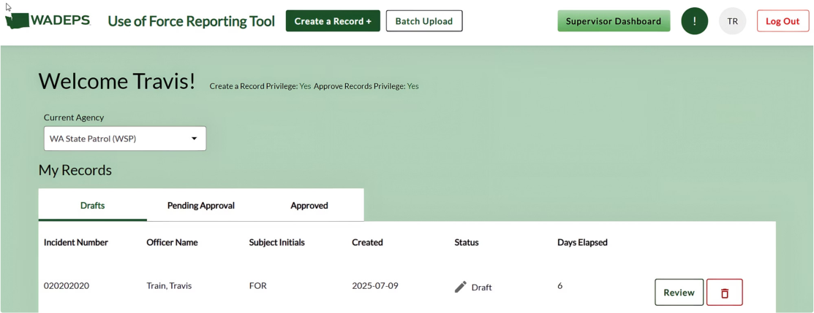
WADEPS Profile
Access your WADEPS profile by selecting your initials in the top-right corner of the screen next to the Log Out button.
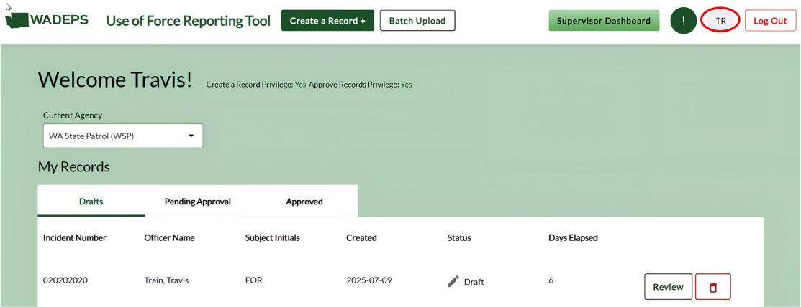
When you are included in a WADEPS use of force report, your WADEPS profile automatically provides the required demographic information.
First-Time Users:
Verify your information is accurate.
Profile data is mirrored from your CJTC student profile and is automatically updated twice a month.
If anything is incorrect, check your profile in your CJTC profile and make updates as needed.
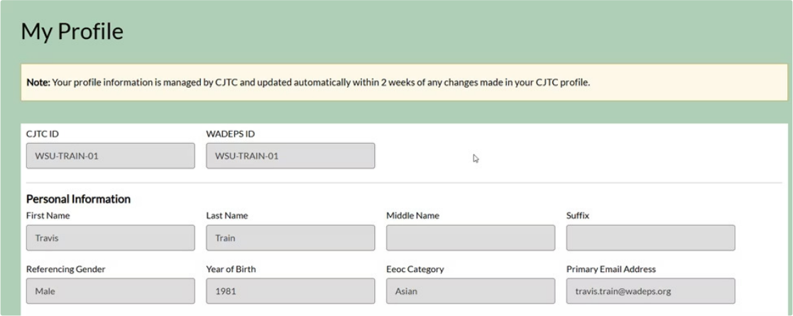
Supervisor Dashboard
Available only to users with admin permissions.
To access:
Select 'Supervisor Dashboard' in the top-right corner of the screen.
The Supervisor Dashboard provides access to the following:
- Records Pending Approval
- Approved Records
- Archived Records
- User Management
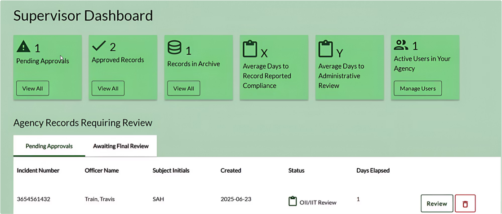
Create a Record
Only available to users with permission to create use of force records in the WADEPS system or with supervisor access.
Permissions to create records are set by your agency administrator.
Access 'Create a Record' from any WADEPS screen:
- Top-Left Corner
- Under Home in the bottom-left corner
This will launch the WADEPS webform to submit a single Use of Force Record.
Batch Upload
- Only available to users with Admin permissions
- Access Batch Upload from any WADEPS screen:
- Button located at the top of the page
- Link located under 'Home' at the bottom of the page
- Batch Upload allows you to:
- Download the batch upload template
- Upload data for multiple use of force events at once
Notifications
Access notifications using the! icon on the top right of the screen.
Batch Upload error notifications, key system updates, and other notifications will be available on this screen.
CAD Data Upload
Only available to users with permission to upload CAD records in the WADEPS system or with supervisor access.
Permissions to upload CAD records are set by your agency administrator.
Access 'CAD Data Upload' from any WADEPS screen:
- Button located at top of page
- CAD Data Upload allows you to:
- Download the CAD upload template
- Upload CAD data
Training
Access the Training Manual and the Data Manual from any WADEPS screen.
Located under 'Training' at the bottom of each WADEPS page.
Help
- Available at the bottom of every page under 'Help.'
- Provides:
- General Frequently Asked Questions (FAQs)
- Contact Us
- Email Technical Support
Understanding Reportable Uses of Force
In this chapter, you will learn how to determine whether an event is reportable in WADEPS, when a report is required, and how to handle months with no reportable events.
What Counts as a Reportable Use of Force
Per Chapter 10.118 RCW
WADEPS reporting is required for specific uses of force (UOF) as defined by Chapter 10.118 RCW. Whether a use of force event is reportable to WADEPS depends on two key questions:
Question 1
Did the use of force lead to a fatality, great bodily harm, or substantial bodily harm?
Question 2
- Did the use of force involve a force type specified in Chapter 10.118 RCW?
- Did the use of force lead to a fatality, great bodily harm, or substantial bodily harm?
If the answer is yes, the use of force is reportable to WADEPS, regardless of the type of force used.
Injury Type Definition
Great bodily harm 'Bodily injury which creates a probability of death, or which causes significant serious permanent disfigurement, or which causes a significant permanent loss or impairment of the function of any bodily part or organ' (RCW 9A.04.110).
Substantial bodily harm 'Bodily injury which involves a temporary but substantial disfigurement, or which causes a temporary or substantial loss or impairment of the function of any bodily part or organ, or which causes a fracture of any bodily part' (RCW 9A.04.110).
- Did the use of force involve a force type specified in Chapter 10.118 RCW?
- Regardless of injury, the following force types are always reportable to WADEPS:
- Discharged a firearm at or in the direction of a person
- Pointed a firearm at a person
- Used a chokehold or vascular neck restraint
- Used an electronic control weapon against a person
- Used pepper spray against a person
- Discharged a less-lethal shotgun or other impact munitions at or in the direction of a person
- Struck a person using an impact weapon
- Used any part of their body to strike a person
- Used a vehicle to intentionally strike a person or other vehicle
- Deployed a canine, or had under the law enforcement officer's control a canine, that bites a person
WADEPS Reporting Decision Tree
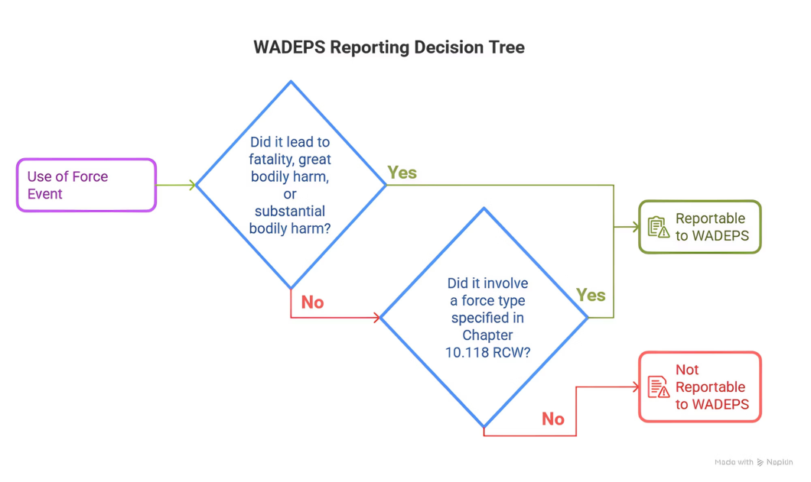
Completing Use-of-Force Reports in WADEPS
In this chapter, you will learn the high-level reporting workflow from initial data entry through record creation and submission for supervisor review.
Completing Use-of-Force Reports in WADEPS
Entering use of force reports in WADEPS follows a three-stage process that mirrors the workflow shown in the PDF manual.
Stage 1: Initial Data Entry
Use of force reports are first entered into the system. This can be done in two ways:
- Create a Record: Used for entering a single use of force event involving one officer and one subject.
- Batch Upload: Allows agencies to upload multiple use of force reports at once using a standardized template.
Create a Record and Batch Upload permissions are managed by each agency within the WADEPS system. Access permissions can be assigned and updated using the User Management feature located in the Supervisor Dashboard.
Stage 2: Supervisor Review
Once a use of force report is completely entered, it must be reviewed by an agency-designated supervisor to verify accuracy and completeness. This review is conducted through the Supervisor Dashboard.
Supervisor review must be completed within 30 days of the use of force event.
Once the review is complete, the UOF record is transferred into the WADEPS data warehouse as a partially completed record.
Stage 3: Administrative Follow-Up
After supervisor approval, agency personnel are required to complete the Administrative Follow-Up portion of the record.
This stage includes follow-up questions related to use of force investigations or reviews. Agencies have 30 days from the point of determination of the investigation to complete these follow-up items.
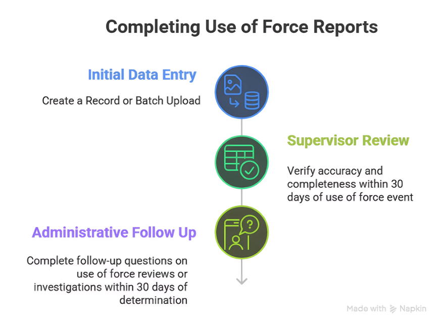
Creating a New Use-of-Force Record
In this chapter, you will learn how to create a new use-of-force record, complete required data fields, and prepare the record for supervisor review.
Stage 2: Create a Record
Access to Data Entry Features
- There are two ways to enter data into WADEPS:
- Create a Record
- Batch Upload
Access to these features is limited to agency personnel with the appropriate permissions. This is determined by your agency within the WADEPS Reporting Tool.
If you have Create Records permissions, you will only be able to submit your own use of force records.
If you have both Admin permissions, you can submit use of force records for multiple officers.
Check Your Permissions
To determine whether you have data entry privileges:
Navigate to the Officer Dashboard (your home page).
Look at the Welcome Message at the top of the page.
- If you have permission to enter your own use of force reports, you will see:
- Permission Level: Create Records
- If you have permission to enter use of force reports for multiple officers, you will see:
- Permission Level: Admin
If permission level is not Create Records or Admin, you do not have access to create or upload records.
Need Help'
If you believe you should have access or need help with permissions, please contact your designated agency contact.
What if my agency has no reportable use of force events for the month'
If your agency has no reportable UOF events for the month, this must still be reported to WADEPS.
Individuals assigned as Supervisors in the WADEPS reporting tool can complete this task in the Supervisor Dashboard.
For instructions on accessing the Supervisor Dashboard, refer to The Supervisor Dashboard (Under Supervisor Review) section of this manual.
For guidance on how to submit a 'no reportable use of force' confirmation, see The Reporting No Reportable Use of Force Events (Under Supervisor Review) section of this manual.
Create a Record:
When to Use 'Create a Record'
To enter information for a single use of force event involving one officer and one subject.
If the use of force event is currently under internal investigation or has been referred for independent investigation by the Office of Independent Investigations (OII) or the Independent Investigation Team (IIT).
- If there are multiple officers and/or multiple subjects, you will need to either:
- Submit a separate record for each officer-subject use of force event using the Create a Record option, or
Use the Batch Upload feature to enter multiple use of force events at once.
This will ensure each officer-subject interaction is recorded and tracked accurately to create incident-based ratios.
Accessing the 'Create a Record' Form
Select 'Create a Record' button on the top of screen.
This will open a new form for entering a single use of force event involving one officer and one subject.
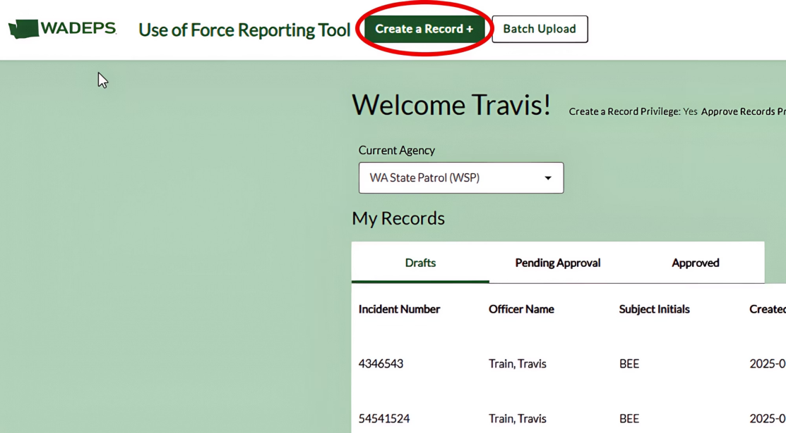
Internal Investigation or Referred for Independent Investigation by OII or an IIT
First, you will indicate whether the officer's use of force (UOF) on the subject is under internal investigation and/or referred for independent investigation by the Office of Independent Investigations (OII) or an Independent Investigation Team (IIT).
- Select all that apply from the following options:
- No
- Internal Investigation
- OII
- IIT
- Next Steps:
If you select 'Internal Investigation', 'OII', or 'IIT':
You will be directed to the Investigations Initial Information page to provide additional details.
If you select 'No":
You will be directed to Create a new UOF record to enter incident details.
Investigations Initial Information
If the use of force (UOF) involving the officer and subject is under internal review or has been referred for independent investigation by the OII or ITT, you will be directed to provide minimal incident details. This information is required for tracking within the WADEPS system and to fulfill reporting requirements.
- Complete the following fields:
- Agency Name
Automatically populated based on the Current Agency selected in your Officer Dashboard.
ORI (Originating Agency Identifier)
Automatically populated based on the Current Agency selected in your Officer Dashboard. If your agency does not have an ORI, the system will use your WADEPS ID.
Officer Name
Select the officer involved in the UOF from a drop-down list. This list is automatically populated based on the Current Agency selected in your Officer Dashboard.
Investigative Entity
Select the investigative entity conducting the independent investigation: either OII or ITT.
Incident Number
Enter the Incident Number as provided by your CAD system.
Incident Date
Enter the date the incident occurred in MM/DD/YYYY format.
- Subject ID
- Enter subject's initials: First, Middle, Last. If initials are unavailable, enter 'unknown'
Submit
After entering the required Investigation Initial Information, click the 'Submit' button to submit this partial record to WADEPS.
Once submitted, the use of force record will be available in pending approvals on the Supervisor Dashboard. See Supervisor Review in this manual.
Create a New UOF Record
If the use of force (UOF) event involving the officer and subject has not been referred for independent investigation by the OII or ITT, you will be directed to create a new UOF Record. The initial page has 5 data elements to complete:
CAD Incident Number
Enter the Computer Aided Dispatch (CAD) incident number associated with the UOF event.
Agency Name
Automatically populated based on the Current Agency selected in your Officer Dashboard.
ORI (Originating Agency Identifier)
Automatically populated based on the Current Agency selected in your Officer Dashboard. If your agency does not have an ORI, the system will use your WADEPS ID.
Officer Name
Select the officer involved in the UOF from a drop-down list. This list is automatically populated based on the Current Agency selected in your Officer Dashboard.
- Subject ID
- Enter subject's initials: First, Middle, Last. If initials are unavailable, enter 'unknown'
Proceed to the Incident Information Section
Once all required fields have been completed, select the 'Create' button located at the bottom left of your screen.
Clicking 'Create' will save the entered information and take open the Incident Information section of the WADEPS Reporting Tool, where you will continue entering details of the UOF incident.
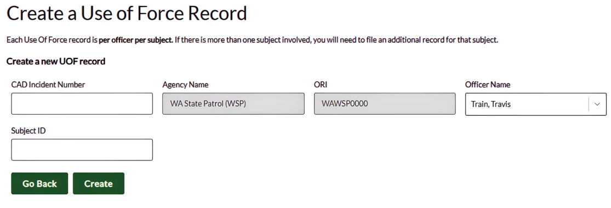
Incident Information
The Incident Information page is where you will provide key incident-level details, such as agency information, initial incident type, and other relevant data.
Incident information has 8 sections with up to 30 total fields to complete on this page. These fields capture information necessary for accurate documentation and reporting of UOF.
- Section: Agency Info
- Agency Name
Automatically populated based on the Current Agency selected in your Officer Dashboard.
ORI (Originating Agency Identifier)
Automatically populated based on the Current Agency selected in your Officer Dashboard. If your agency does not have an ORI, the system will use your WADEPS ID.
WADEPS Agency ID
Automatically populated based on the Current Agency selected in your Officer Dashboard.
- Section: Incident Details
- Incident Number
Automatically populated based on your CAD Incident Number Entry on previous page.
Incident Date
Enter the date the incident occurred in MM/DD/YYYY format. This should match the incident date in CAD, not necessarily when the use of force event occurred.
Incident Time
Enter the time the officer was dispatched or the time the officer indicated they initiated the call or stop. Use the HH:MM format and enter the time in Pacific Standard Time (PST).
- Section: Response Information
- Contact Reason
Select one of four reasons for the initial contact that led to the use of force event.
Public Request for Service
Definition: The contact originated from a member of the public requesting assistance or reporting an incident (typically by phone or in-person).
Agency Request for Service
Definition: The contact was initiated based on a request from another agency or department.
Unit or Officer-Initiated
Definition: The officer initiated the contact without a prior external request (e.g., self-initiated stop).
Planned Activity
Definition: The contact occurred as part of a pre-scheduled or coordinated activity (e.g., warrant service, tactical operation).
Response Type
Select one of four options for the level of cause the officer believed they had for the initial contact.
Social Contact
Definition: a voluntary interaction between an officer and a member of the public.
Legal implication: there is no legal obligation for the individual to stop, answer questions, or remain at the scene.
Reasonable Suspicion
Definition: The officer had specific, articulable facts that would lead a reasonable person to believe that criminal activity may be occurring or has occurred (Washington State Criminal Justice Commission, n.d.).
Legal Implication: Justifies brief stops and questioning but not an arrest without further justification.
Probable Cause
Definition: The officer has strong evidence that would lead a reasonable person to believe that an individual has committed, is committing, or is about to commit a crime.
Legal Implication: Justifies significant intrusions on a person's liberty, such as searches, seizures, or arrest.
Involuntary Treatment Act and Other Commitment for Behavioral Health
Definition: Legal authority under chapters 71.05, 10.77, and 71.34 RCW that allows peace officers to take individuals into custody for mental health evaluation or treatment when the person, as a result of a mental disorder, presents an imminent likelihood of serious harm to themselves or others, or is gravely disabled (unable to provide for their basic needs of health or safety).
Legal Implication: A peace officer may use physical force, provided they exercise reasonable care, to the extent necessary to take a person into custody, transport a person for evaluation or treatment, or provide other assistance under civil commitment laws. The use of force must be reasonable, proportionate, and follow established protocols for dignity and safety.
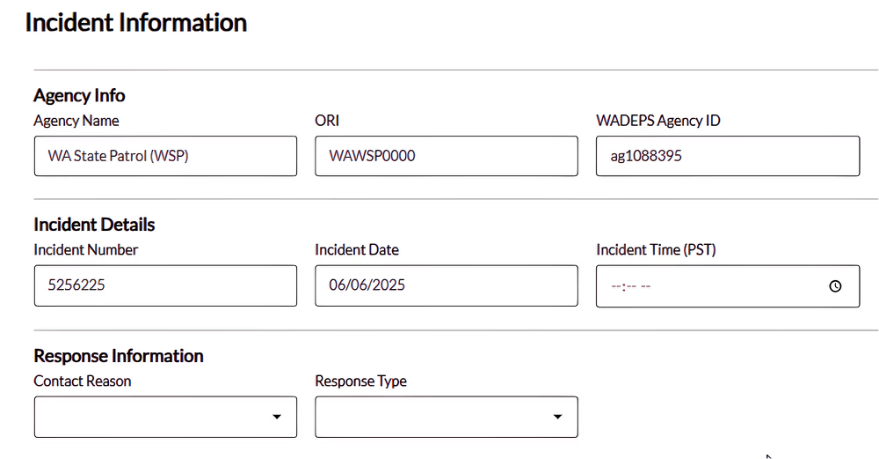
Section: Location
Incident Location County
From the dropdown menu, select the county where the use of force event occurred or select Out of State if applicable.
Incident Location Detail
If a county was selected in Incident Location County, the Incident Location Detail field will appear.
- Choose the option that best describes the specific location of the incident. The available options include:
- Unincorporated Area
Definition: An area not governed by a local municipality (city or town).
- State HWY
- Interstate HWY
- City
Definition: Any municipality with its own local government (such as a city or town).
Incident Location Detail City
If 'City' is selected in the Incident Location Detail field, an additional field, Incident Location detail City, will appear.
Choose the city where the use of force event occurred from the drop-down list.
- Location Type
- Select one of three options for where the use of force event occurred:
- Indoor
- Outdoor
- Both
- Indoor Location
If 'Indoor' or 'Both' is selected in the Location Type field, an additional field, Indoor Location, will appear.
Select one of the following options that best describes where the use of force event occurred.
Single Family Residence
Definition: A detached home or standalone residential structure.
- Apartment or Multifamily residence
- Definition: A unit within a multi-unit residential building such as an apartment complex or duplex
- Commercial/Business Premises
Definition: A business or commercial property such as a restaurant, office, etc.
Government Facility
Definition: A government-operated indoor space such as a courthouse, public school/university, municipal offices.
Medical Facility
Definition: Includes clinics, hospitals, urgent care centers, or other licensed medical settings.
Transit Facility:
Definition: Indoor transit areas such as indoor train stations, bus terminals, airport terminals, etc.
Other
Definition: Use this option if the location does not fit any of the categories above.
Outdoor Location
If 'Outdoor' or 'Both' is selected in Location Type field, an additional field, Outdoor Location, will appear.
Select one of the following options that best describes where the use of force occurred.
Residential Private Property
Definition: yard, driveway, or other outdoor area associated with private residence.
Commercial Private Property
Definition: parking lots, outdoor spaces of businesses or commercial entities.
- Government Property
- Definition: Outdoor areas surrounding government buildings (such as court houses, schools/universities, etc.)
- Public Right of Way
- Definition: Highway, street, sidewalk, boat launch, or other publicly accessible travel routes
- Transit Property
Definition: Bus stops, transit center platforms, park and ride lots, etc.
Public Lands
Definition: Parks, state/national forests, etc.
Other:
Definition: Use this option if none of the above categories accurately describe the outdoor location.
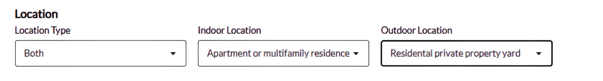
- Section: Initial Incident Type
- Initial Incident Type
In this field, indicate the nature of the initial incident that led to officer involvement. This includes either the reason the officer was dispatched or the reason for the self-initiated contact.
- Select all that apply from the following response options:
- Offense Against Person
Definition: an incident involving harm or threats of harm to an individual. This includes assault, homicide, and similar crimes.
Property Offense
Definition: an incident involving theft, damage, or destruction of property.
Public Order Offense
Definition: an incident involving disturbing social or societal norms, such as disturbing the peace, disorderly conduct, public intoxication, and similar offenses.
Vehicle Stop
Definition: an incident involving stopping a vehicle (motor and non-motor vehicles) for an alleged offense or violation.
Pedestrian Stop
Definition: an incident involving stopping an individual on foot (pedestrian) for an alleged offense or violation.
Civil Caretaking
Definition: an incident involving a mental health/wellness check, civil infraction, eviction order enforcement, domestic order enforcement, or similar.
Warrant
Definition: an incident involving serving a judicial warrant, such as an arrest warrant or a search warrant.
Other
Definition: Use this option if none of the above categories accurately describe initial incident type and provide a brief explanation in the space provided.
Incident Detail: Offense Against Person
This item will only appear if 'Offense Against Person' is selected as the Initial Incident Type.
When this option is selected, you must specify the offense. Select all applicable options from the list below.
Assault
Definition: involves an 'unlawful attack by one person upon another' (U.S. Department of Justice - Federal Bureau of Investigation, 2019).
Includes offenses defined in Chapter 9A.36 RCW.
Homicide
Definition: involves the killing on an individual, including murder, homicide by abuse, manslaughter, and similar offenses.
Includes offenses defined in Chapter 9A.32 RCW.
Rape
Definition: involves 'the carnal knowledge of a person, without the consent of the victim, including instances where the victim is incapable of giving consent because of his/her' age or because of his/her temporary or permanent mental or physical incapacity (U.S. Department of Justice - Federal Bureau of Investigation, 2019).
Includes offenses defined in RCW 9A.44.040, 9A.44.050, 9A.44.060, 9A.44.073, 9A.44.076, and 9A.44.079.
Robbery
Definition: involves the 'taking, or attempting to take, anything of value under confrontational circumstances from the control, custody, or care of another person by force or threat of force or violence and/or by putting the victim in fear of immediate harm? (U.S. Department of Justice - Federal Bureau of Investigation, 2019).
Includes offenses defined in RCW 9A.56.190–RCW 9A.56.210.
Civil Order Violation
Definition: involves the violation of a court-issued civil protection order.
Other
Definition: If none of the above apply, select other and briefly describe the offense in the space provided.
Incident Detail: Property Offense
This item will only appear if 'Property Offense' is selected as the Initial Incident Type.
Specify the type of property-related offense. Select all applicable options from the list below.
Arson
Definition: involves 'the unlawful and intentional damage, or attempt to damage, any real or personal property by fire or incendiary device' (U.S. Department of Justice - Federal Bureau of Investigation, 2019).
Includes offenses defined in RCW 9A.48.020–RCW 9A.48.030.
Burglary
Definition: involves 'the unlawful entry into a building or other structure with the intent to commit a felony or a theft' (U.S. Department of Justice - Federal Bureau of Investigation, 2019).
Includes offenses defined in RCW 9A.52.020, RCW 9A.52.025, and RCW 9A.52.030.
Theft:
Definition: involves the 'unlawful taking carrying, leading, or riding away of property from the possession, or constructive possession, of another person' (U.S. Department of Justice - Federal Bureau of Investigation, 2019).
Includes offenses defined in RCW 9A.56.020–RCW 9A.56.060.
Mischief
Definition: involves willful damage, destruction, or defacement of property.
Includes offenses defined in RCW 9A.48.070–RCW 9A.48.090.
Trespassing
Definition: involves unlawfully entering or remaining in or on a land, a dwelling, or other real property (U.S. Department of Justice - Federal Bureau of Investigation, 2019).
Includes offenses defined in RCW 9A.52.070–RCW 9A.52.080.
Vehicle Theft/Prowl:
Definition: involves vehicle theft or unlawfully entering a vehicle to commit a crime against person or property.
Includes offenses defined in RCW 9A.56.065 and RCW 9A.52.095–RCW 9A.52.10.
Other
Definition: If none of the above apply, select other and briefly describe the offense in the space provided.
Incident Detail: Public Order Offense
This item will only appear if 'Public Order Offense' is selected as the Initial Incident Type.
Specify the public order offense. Select all applicable response options from the list below.
Public Disturbance
Definition: Includes disorderly conduct, false reporting, failure to disperse and other offenses.
Includes offenses defined in RCW 9A.84.010, RCW 9A.84.020, RCW 9A.84.030, RCW 9A.84.040, and other related statutes as applicable.
Drug Related
Definition: The violation of laws prohibiting the production, distribution, and/or use of certain controlled substances and the equipment or devices utilized in their preparation and/or use (U.S. Department of Justice - Federal Bureau of Investigation, 2019).
Includes offenses defined in Chapter 69.50 RCW, Chapter 69.41 RCW, Chapter 69.52 RCW, and other related statutes as applicable.
Sex Related
Definition: Includes indecent exposure, prostitution, and other related offenses.
Includes offenses defined in RCW 9A.88.010, RCW 9A.88.030–RCW 9A.88.110, and other related statutes as applicable.
Weapon Related
Definition: This refers to the violation of laws or ordinances that prohibit the manufacture, sale, purchase, transportation, possession, concealment, or use of firearms, cutting instruments, explosives, incendiary devices, or other deadly weapons (U.S. Department of Justice - Federal Bureau of Investigation, 2019).
Includes offenses defined in Chapter 9.41 RCW and other related statutes as applicable.
Transit Related
Definition: Offenses that occur while on transit vehicles and/or transit facilities, such as drinking alcohol, obstructing transit vehicles, and other related offenses.
Includes offenses defined in RCW 9.91.020, RCW 9.91.023, RCW 9.91.025, and other related statutes as applicable.
Other:
Definition: If none of the above apply, select other and briefly describe the offense in the space provided.
Incident Detail: Vehicle Offense
This item will only appear if 'Vehicle Offense' is selected as the Initial Incident Type.
Specify the nature of the vehicle offense. Select all applicable response options from the list below.
DUI
Definition: Driving under the influence of alcohol and/or drugs.
Includes offenses defined in RCW 46.61.502, RCW 46.61.503, and RCW 46.61.504.
Accident
Definition: Collision or accident occurring on public or private roadway.
Includes offenses defined in RCW 46.52.020–RCW 46.52.030 and other related statutes as applicable.
Moving Violation
Definition: An infraction related to the operation of a vehicle while it is in motion.
Includes offenses defined in Chapter 46.61 RCW and other related statutes as applicable.
Non-Moving Violation
Definition: An infraction not dependent on the vehicle being in motion.
Includes offenses defined in Title 46 RCW, including Chapter 46.61 RCW, and other related statutes as applicable.
Other
Definition: If none of the above apply, select other and briefly describe the offense in the space provided.
Incident Detail: Civil Caretaking
This item will only appear if 'Civil Caretaking' is selected as the Initial Incident Type.
Specify the nature of civil caretaking. Select all applicable response options from the list below.
Mental Health/Wellness Check
Definition: checking on the status/well-being of a person.
Civil Infraction
Definition: involves a violation that results in fines and not criminal charges.
- Eviction Order Enforcement
- Domestic Order Enforcement
- Other
Definition: If none of the above apply, select other and provide a brief description in the space provided.
Section: Arrest Information
- Arrested'
- ' '
- Arrested
Definition: subject was taken into custody for a criminal offense.
Civil Detention
Definition: subject was taken into custody for non-criminal offense reasons, such as mental health evaluation.
No Arrest or Detention
Definition: subject was not taken into custody.
Arrest reason(s)
This item will only appear if 'Arrested' is selected in the Arrested' Field.
Specify the reasons for the arrest. Select all applicable reasons from the list below.
Obstruction/resistance
Definition: Willfully hindering, delaying, or obstructing a law enforcement officer; resisting arrest.
Person Crime
Definition: offense against a person (involving harm or threats of harm to an individual).
Property Crime:
Definition: property offense (involving theft, damage, or destruction of property).
Offense against public order
Definition: public order offense (involving disturbing social or societal norms, such as disturbing the peace, disorderly conduct, public intoxication, and similar offenses).
Vehicle violation
Definition: vehicle offense (vehicle theft or unlawfully entering a vehicle to commit a crime against person or property).
Warrant
Definition: based on a judicially authorized warrant.
Other
Definition: If none of the above apply, select other and briefly describe the arrest reason in the space provided.
Arrest Detail: Offense Against Person
This item will only appear if 'Person Crime' is selected in the Arrest reason(s) Field.
Specify the reasons for the arrest. Select all applicable reasons from the list below.
Assault
Definition: involves an 'unlawful attack by one person upon another' (U.S. Department of Justice - Federal Bureau of Investigation, 2019).
Includes offenses defined in Chapter 9A.36 RCW.
Homicide
Definition: involves the killing on an individual, including murder, homicide by abuse, manslaughter, and similar offenses.
Includes offenses defined in Chapter 9A.32 RCW.
Rape
Definition: involves 'the carnal knowledge of a person, without the consent of the victim, including instances where the victim is incapable of giving consent because of his/her' age or because of his/her temporary or permanent mental or physical incapacity (U.S. Department of Justice - Federal Bureau of Investigation, 2019).
Includes offenses defined in RCW 9A.44.040, 9A.44.050, 9A.44.060, 9A.44.073, 9A.44.076, and 9A.44.079.
Robbery
Definition: involves the 'taking, or attempting to take, anything of value under confrontational circumstances from the control, custody, or care of another person by force or threat of force or violence and/or by putting the victim in fear of immediate harm? (U.S. Department of Justice - Federal Bureau of Investigation, 2019).
Includes offenses defined in RCW 9A.56.190–RCW 9A.56.210.
Civil Order Violation
Definition: involves the violation of a court-issued civil protection order.
Other
Definition: If none of the above apply, select other and briefly describe the offense in the space provided.
Arrest Detail: Offense Against Property
This item will only appear if 'Property Crime' is selected in the Arrest reason(s) Field.
Specify the reasons for the arrest. Select all applicable reasons from the list below.
Arson
Definition: involves 'the unlawful and intentional damage, or attempt to damage, any real or personal property by fire or incendiary device' (U.S. Department of Justice - Federal Bureau of Investigation, 2019).
Includes offenses defined in RCW 9A.48.020–RCW 9A.48.030.
Burglary
Definition: involves 'the unlawful entry into a building or other structure with the intent to commit a felony or a theft' (U.S. Department of Justice - Federal Bureau of Investigation, 2019).
Includes offenses defined in RCW 9A.52.020, RCW 9A.52.025, and RCW 9A.52.030.
Theft
Definition: involves the 'unlawful taking carrying, leading, or riding away of property from the possession, or constructive possession, of another person' (U.S. Department of Justice - Federal Bureau of Investigation, 2019).
Includes offenses defined in RCW 9A.56.020–RCW 9A.56.060.
Mischief
Definition: involves willful damage, destruction, or defacement of property.
Includes offenses defined in RCW 9A.48.070–RCW 9A.48.090.
Trespassing
Definition: involves unlawfully entering a land, a dwelling, or other real property (U.S. Department of Justice - Federal Bureau of Investigation, 2019).
Includes offenses defined in RCW 9A.52.070–RCW 9A.52.080.
Vehicle Theft/Prowl:
Definition: involves vehicle theft or unlawfully entering a vehicle to commit a crime against person or property.
Includes offenses defined in RCW 9A.56.065 and RCW 9A.52.095–RCW 9A.52.10.
Other
Definition: If none of the above apply, select other and briefly describe the offense in the space provided.
Arrest Detail: Public Order Offense
This item will only appear if 'Offense Against the Public Order' is selected in the Arrest reason(s) Field.
Specify the reasons for the arrest. Select all applicable reasons from the list below.
Public Disturbance
Definition: Includes disorderly conduct, false reporting, failure to disperse and other offenses.
Includes offenses defined in RCW 9A.84.010, RCW 9A.84.020, RCW 9A.84.030, RCW 9A.84.040, and other related statutes as applicable.
Drug Related
Definition: The violation of laws prohibiting the production, distribution, and/or use of certain controlled substances and the equipment or devices utilized in their preparation and/or use (U.S. Department of Justice - Federal Bureau of Investigation, 2019).
Includes offenses defined in Chapter 69.50 RCW, Chapter 69.41 RCW, Chapter 69.52 RCW, and other related statutes as applicable.
Sex Related
Definition: Includes indecent exposure, prostitution, and other related offenses.
Includes offenses defined in RCW 9A.88.010, RCW 9A.88.030–RCW 9A.88.110, and other related statutes as applicable.
Weapon Related
Definition: This refers to the violation of laws or ordinances that prohibit the manufacture, sale, purchase, transportation, possession, concealment, or use of firearms, cutting instruments, explosives, incendiary devices, or other deadly weapons (U.S. Department of Justice - Federal Bureau of Investigation, 2019).
Includes offenses defined in Chapter 9.41 RCW and other related statutes as applicable.
Transit Related
Definition: Offenses that occur while on transit vehicles and/or transit facilities, such as drinking alcohol, obstructing transit vehicles, and other related offenses.
Includes offenses defined in RCW 9.91.020, RCW 9.91.023, RCW 9.91.025, and other related statutes as applicable.
Other:
Definition: If none of the above apply, select other and briefly describe the offense in the space provided.
Arrest Detail: Vehicle Offense
This item will only appear if 'Vehicle Offense' is selected in the Arrest reason(s) Field.
Specify the reasons for the arrest. Select all applicable reasons from the list below.
DUI
Definition: Driving under the influence of alcohol and/or drugs.
Includes offenses defined in RCW 46.61.502, RCW 46.61.503, and RCW 46.61.504.
Accident
Definition: Collision or accident occurring on public or private roadway.
Includes offenses defined in RCW 46.52.020–RCW 46.52.030 and other related statutes as applicable.
Moving Violation
Definition: involves violation of laws by a driver in a moving vehicle.
Includes offenses defined in Chapter 46.61 RCW and other related statutes as applicable.
Non-Moving Violation
Definition: involves traffic infractions that occur in a non-moving vehicle.
Includes offenses defined in Title 46 RCW, including Chapter 46.61 RCW, and other related statutes as applicable.
Other
Definition: If none of the above apply, select other and briefly describe the offense in the space provided.
Section: Domestic Violence
Domestic Violence Incident
In this section, you will indicate whether the incident was associated with domestic violence. Select either Yes or No.
Domestic Violence Arrest
This item will only appear if 'Arrested' is selected in the Arrested' Field.
Specify whether the arrest included domestic violence language. Select either Yes or No.
Section: Persons Present
The last section of information collected in incident details is the total persons present during the UOF event. Persons Present includes five fields: Total Officers Present, Total Officers Using Force, Total Persons Present, Subjects Reportable Use of Force Count, and Minors Present.
Total Officers Present
Indicate the total number of officers physically present (on scene) at the time force was used on the subject of this report.
Enter a whole number from 1 to 99.
Count all officers present, regardless of whether they personally used force.
Do not include officers who arrived after the use of force incident occurred.
Total Officers Using Force
Record the total number of officers using force on the subject of this report.
Enter a whole number from 1 to 99.
Count all officers using force on the subject of this use of force report.
Total Persons Present
Indicate the total number of persons present (on scene) at the time force was used on the subject of this report, not including officers.
Enter a whole number from 1 to 99.
Do not include officers in this count.
Subjects Reportable Force Count
Indicate the total number of subjects on whom the officer identified in this report used reportable force.
Enter a whole number from 1 to 99.
Count only subjects on whom the officer personally used reportable force during the incident.
Minors Present
Indicate whether minors were present (on scene) when use of force was used on the subject of this report. Select one of the following: Yes, No, Unknown.
Proceed to the Type of Force Section
When all required Incident Information fields have been completed, select the 'Next' button located at the bottom left of the screen.
Clicking 'Next' will save the entered information so far and open the Type of Force section of the WADEPS Reporting Tool, where you will continue documenting details of the UOF event.
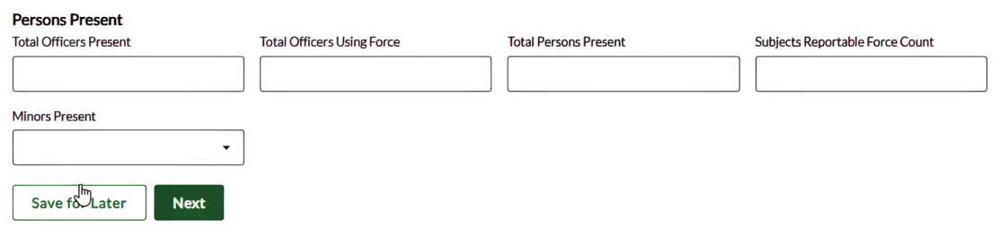
Type of Force
The Type of Force page is where you will provide key information regarding the UOF, such as specific type of force and the time to force.
Type of Force has three sections with 15 total fields.
Point
Definition: The officer pointed a conventional firearm (e.g., handgun, rifle) directly at the subject.
WADEPS Criteria: Report any instance where a firearm is pointed in an operational setting, excluding ready positions (e.g., low-ready, high-ready), and where a person other than law enforcement personnel could have been struck if the weapon was discharged. This may be judged by considering the likely trajectory as if a laser was mounted to the weapon.
Excludes:
Less-lethal weapons (e.g., bean bag shotguns, 40mm impact launchers).
Firearms held in a ready position (e.g., low-ready, high-ready).
Discharge
Definition: The officer discharged a conventional firearm at or in the direction of a person.
Excludes: Less-lethal weapons (e.g., bean bag shotguns, 40mm impact launchers).
ECW
Definition: The officer used an electronic control weapon (ECS), such as a TASER, at or in the direction of a person.
Excludes: Displaying, holding, or aiming the ECS without discharging it.
Chemical
Definition: The officer used a chemical agent—such as oleoresin capsicum (OC) spray (pepper spray) or CS Gas (tear gas)—against a person.
This includes any deployment where the chemical agent is used against a person or persons, regardless of whether it made contact.
Excludes: Displaying, holding, or aiming the chemical agent without discharging it.
Less Lethal Discharge
Definition: The officer discharged a less than lethal weapon, such as a less-lethal shotgun, impact munitions launcher, bean bag rounds, or other less-lethal weapons, at or in the direction of a person.
Excludes:
Displaying, holding, or aiming the weapon without discharging it.
Electronic control weapons and OC sprays
Impact:
Definition: The officer struck a person using an impact weapon or instrument, including a club, baton, flashlight, and other impact weapons.
Excludes:
Strikes using the officer's own body (e.g., punches, kicks, knee strikes).
- Use of a vehicle to strike or subdue a person
- Strike
Definition: The officer used any part of their body to physically strike a person, including kicking, slapping, using closed fists, legs, or feet.
- Excludes: Takedown maneuvers (physical maneuvers used by law enforcement to take a subject to the ground)
- Vehicle- Person
Definition: The officer used a vehicle to intentionally strike a person.
Vehicle – Vehicle
Definition: The officer used a vehicle to intentionally strike another vehicle.
Vehicle-on-Vehicle Force Detail
This field will appear if 'Yes' is selected in the Vehicle – Vehicle. In this field, whether the vehicle-to- vehicle use of force was a PIT maneuver or another maneuver.
- Select from the following options:
- PIT maneuver under 40 MPH
- PIT maneuver 40 MPH or over
- Not a PIT maneuver
- Canine
Definition: The officer deployed a canine by releasing it from the officer's physical control or had the canine under law enforcement control and it bites a person.
Neck
Definition: The officer used a neck restraint or chokehold, as defined in RCW 10.166.020.
RCW 10.166.020 includes two distinct types:
Chokehold: 'The application of direct pressure to a person's trachea or windpipe for the purpose of restricting another person's airway' (Revised Code of Wash. § 10.166.020, 2021).
Neck Restraint: 'any vascular neck restraint or similar restraint, hold, or other tactic in which pressure is applied to the neck for purposes of restricting blood flow' (Revised Code of Wash. § 10.166.020, 2021).
- Other Type of Force
- This section contains a single open-text field titled 'Other Type of Force.'
- Use this field if:
the officer used a type of force that is not already captured in the standard Type of Force fields and the UOF resulted in great bodily harm, substantial bodily harm, or a fatality.
Pepper Impact Projectiles, commonly referred to as pepper balls, are deployed.
Instructions: If the officer used a force type not listed in the predefined categories (Type of Force), provide a brief description of that force here, otherwise leave this field blank.
- Fatality
- Great Bodily Harm
- Substantial Bodily Harm
- Exception
Pepper impact projectiles (pepper balls) must always be documented in the " Other" field due to their hybrid nature, even when no injury occurs.
Section: Time to Force
This section contains up to three fields that must be completed: Time to Force, Video, and Time to Force – BWC.
Time to Force
Definition: The approximate time that passes between the officer first interacting with the subject at the scene and the time force was first used.
- Select one of the following options:
- Immediate
- Less than 1 minute
- 1 – 5 minutes (1 to 5:59)
- 6 – 10 minutes (6 to 10:59)
- 11 minutes or more
- Video
Indicate whether there is police-recorded footage of the use of force event. This includes recordings from body-worn cameras, dash cameras, or any other agency-authorized video devices.
Select Yes if any such video exists of the incident. Select No if not such video exists.
Time to Force - BWC
This field only appears if 'Yes' in the selected in the Video, indicating that police-generated video footage of the initial use of force exists.
Definition: Using the police-generated video of the event (e.g., officer's body-worn camera (BWC) footage, dash cam footage, etc.,) record the approximate time elapsed between the officer's first contact with the subject at the scene and the moment force was first used. If a police-generated video of the initial use of force.
Enter the time in HH:MM:SS format.
Proceeding to the Subject Information Section
Once all required fields have been completed, select the 'Next' button located at the bottom left of your screen. Clicking 'Next' will save the entered information and take you to the Subject Information section of the WADEPS form, where you will continue documenting details of the UOF event.
Subject Information
The Subject Information page is where you will provide more information on the subject of this report, such as their age, gender, and other relevant data. If the officer of this report used force on multiple subjects, a new Use of Fore record for each subject.
Subject information has 5 sections with up to 16 total fields to complete on this page. These fields capture information necessary for accurate documentation and reporting of UOF.
Section: Basic Subject Information
Basic subject information contains 3 fields: Subject ID, Subject Age, and Subject Gender.
Subject ID
Automatically populated based on the 'Subject ID' entered in Create a New Use of Force section.
Subject Age
Enter the verified age of the subject in whole years only.
Do not include months or partial years
- Subject Gender
- Enter the verified gender of the subject. Select all that apply from the following options:
- Male
- Female
- Non-binary
- Transgender
- Unknown
Section: Subject Race/Ethnicity
This section contains two required fields: the subjects perceived race/ethnicity and the subject's verified race/ethnicity.
Subject Race/Ethnicity Perceived
In this field, enter the officer's perception of the subject's race(s) and/or ethnicity(ies) at the time of the use of force event.
Select all that apply from the following options:
- American Indian/Alaska Native
- Asian
- Black/African American
- Hispanic/Latino
- Middle Eastern/North African
- Native American/Pacific Islander
- White
- Unknown
Subject Race/Ethnicity Verified
In this field, record the subject's verified race(s) and ethnicity(ies) at the time of the use of force event.
- Select all that apply from the following options:
- American Indian/Alaska Native
- Asian
- Black/African American
- Hispanic/Latino
- Middle Eastern/North African
- Native American/Pacific Islander
- White
- Unknown
- Guidance for Verification:
Whenever possible, confirm race and ethnicity directly with the subject.
- If the subject was unable or unwilling to provide the information, verification may be obtained from:
- Family members
- Others present at the scene
- Tribal Affiliation
In this field, indicate whether the subject is a member of a federally or state-recognized Tribe.
- Select one of the following options:
- Yes
- No
- Refused
- Unknown
- Guidance for Verification:
Use official records, tribal-issues IDs or enrollment cards, to confirm the information when possible.
If official records are not available, subject tribal affiliation status can be confirmed with the subject, family members, or others on scene.
Section: Subject Condition
This section contains two required fields: the Injury and Impairment.
Injury
In this field, record any injuries the subject sustained during the reportable use of force event.
- Select all that apply from the following options:
- None
Definition: no injuries during the reportable use of force event.
Apparent minor injury
Definition: minor injuries that can be treated on scene with basic first aid (bandaging).
- Examples: minor cuts or bruises
- Severe laceration
Definition: Cuts or wounds that require professional medical treatment, such as stitches or staples.
Examples: a deep cut on the arm that exposes muscle or fat tissue, a large, jagged wound with uncontrolled bleeding, a torn lip or ear that requires reconstructive closure.
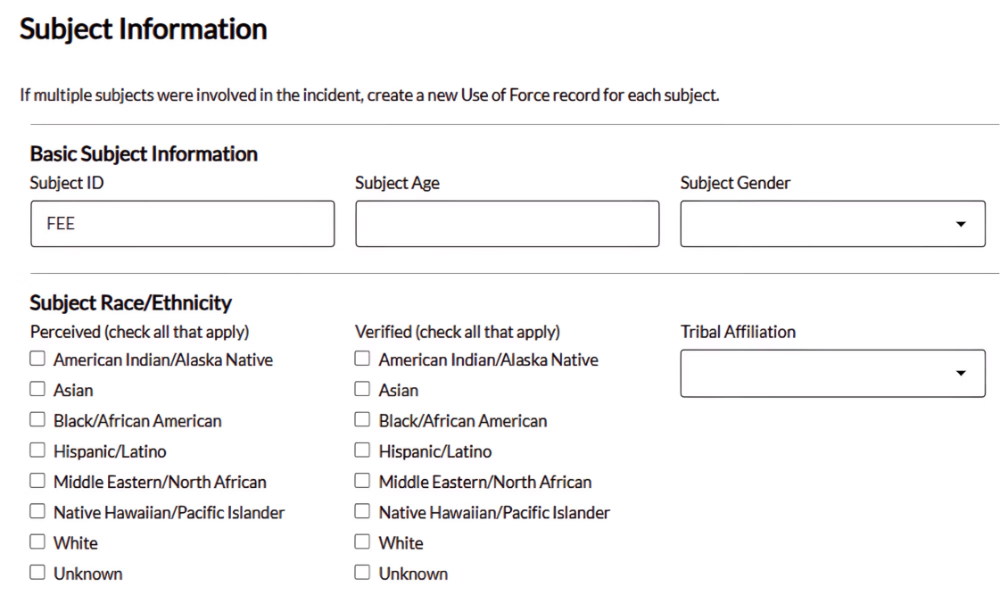
Loss of teeth
Definition One or more teeth were dislodged or broken as a result of the use of force event.
Canine bite
Definition: injury caused by a bite from a canine deployed by the officer during the use of force event. This includes any instance where the subject was bitten, regardless of whether the officer gave or withheld a release command.
Apparent broken bones
Definition: suspected or confirmed fractures observed at the scene or confirmed later.
Possible internal injury
Definition: signs or complaints suggesting internal trauma, even if not confirmed at the time of the use of force event.
Examples: signs of internal trauma could include but are not limited to difficulty breathing/shortness of breath, abdominal pain or tenderness, chest pain, vomiting or coughing up blood, loss of bladder or bowel control, and complaints of pain without visible injury.
Unconscious
Definition: the subject lost consciousness during or immediately after the use of force event.
Gunshot wound
Definition: any injury caused by a projectile resulting from the discharge of a firearm. This includes injuries where a bullet or bullet fragment strikes or causes physical harm to the body.
Note: This classification does not include injuries caused solely by the sound, shockwave, or muzzle blast of a firearm (e.g., ruptured eardrums or burns from close-range discharge). Such injuries should be documented under 'Other Major Injury' or 'Apparent Minor Injury' depending on the severity of injury and whether the injury requires medical treatment beyond basic first aid.
Death
Definition: the subject died during or as a result of the use of force event.
Other major injury
Definition: any significant injury not classified as an Apparent Minor Injury and not captured by the categories listed above. Please provide a clear description.
Unknown
The subject's injury status is unknown because the subject has not been identified.
Impairment
In this field, record the officer's perception of any impairments observed in the subject at the time of the use of force event. This is based on observed behavior, statements, or other indicators—not medical confirmation.
- Select all that apply from the following options:
- None
Definition: No observable signs of impairment.
Alcohol
Definition: Subject appears to be impaired by alcohol.
Examples: Smell of alcohol, slurred speech, unsteady gate.
Drugs
Definition: Subject appears impaired by drugs.
Examples: Erratic behavior, dilated pupils, lethargy, hyperactivity.
Mental Health
Definition: Subject appears to be experiencing a mental health crisis or condition that impacts behavior.
Examples: Disorientation, hallucinations, paranoia.
Unknown
Definition: Signs of impairment are present, but the source (e.g., substance use vs. mental health) cannot be determined.
Note: This option can also be selected when the subject has not been identified
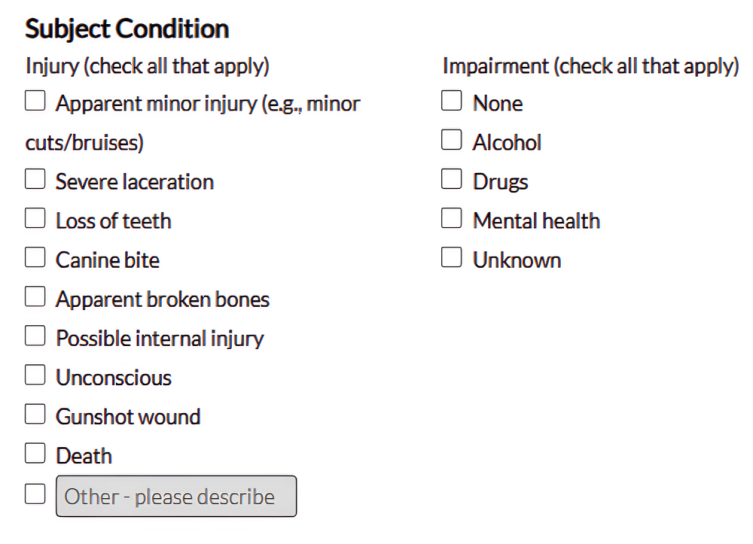
Section: Subject Armed
Subject Believed to be Armed
In this field, record whether the subject was believed by the officer to be armed at the time of the use of force incident, regardless of whether a weapon was later found or confirmed.
- Response Options:
- Yes
Definition: the officer believed the subject had a weapon.
No
Definition: the officer did not believe the subject had a weapon.
Subject Weapon Type
In this field, record types of weapons or armaments found on the subject or used by the subject during the use of force event.
- Select all that apply from the following options:
- None
Definition: No weapon was possessed or used by the subject.
Blunt Object:
Definition: Any object capable of causing injury through impact or blunt force trauma.
Examples: Includes clubs, bats, sticks, pipes, or any object used to strike.
Edged Object
Definition: any object with a sharpened edge or point capable of cutting, piercing, or stabbing.
Examples: Includes knives, box cutters, machetes, or any object with a sharp edge or point.
ECW (Electronic Control Weapon)
Definition: A device that delivers an electric shock.
Examples: includes tasers, stun guns, etc.Chemical/explosive
Definition: Substances or devices that use chemical agents or explosive force to cause injury or capacitation.
Examples: includes pepper spray, tear gas, homemade explosives, or Molotov cocktails.
Projectile
Definition: Any object thrown, launched, or propelled from a distance.
Examples: includes sling shots, thrown objects (e.g., rocks, bottles), less than lethal weapons (e.g. bean bag rounds, rubber bullets), improvised projectile devices (e.g., homemade launchers).
Firearm
Definition: Any operable or inoperable device designed to expel a projectile through explosive force.
Examples: includes handguns, rifles, shotguns, and more.
Vehicle
Definition: A motor or non-motor vehicle used or attempted to be used as a weapon.
Example: Accelerating towards officers or others with intent to strike, swerving at people, etc.
Unknown
Select this option only if the subject has not been identified and it is not possible to determine whether the subject possessed a weapon.
Note: If a weapon is present but not used, it should still be recorded here.
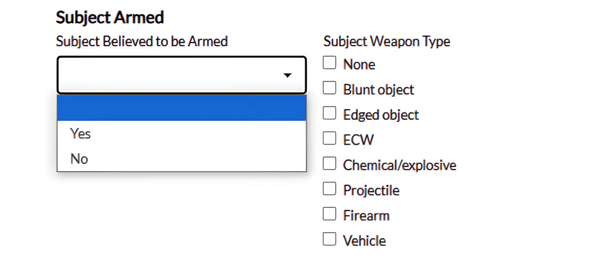
Section: Subject Actions Prior to Force
This section contains six required fields: threat to officers, threat to others, threat to self, subject resistance, flight, and civil disobedience.
Threat to Officers
In this field, record the highest level of imminent threat the subject posed to officers prior to the use of force.
- Select one of the following options:
- None
Definition: No observable threat to officers.
Verbal Threat
Definition: Subject made verbal statements indicating intent to harm officers.
Examples: Threats to fight, attack, or kill.
Threatening Posture/Furtive Movements
Definition: Subject exhibited aggressive or suspicious physical behavior.
Examples: Subject assumes fighting stance, reaches into pockets or waistband in a threatening or evasive manner, etc.
Assault
Definition: Subject made physical contact or attempted to strike, grab, or otherwise attack an officer.
Use or display of a less-lethal weapon
Definition: Subject used or displayed objects capable of causing harm but not believed to be lethal or likely to cause serious bodily injury.
Examples: Sticks, bottles, rocks, chair, etc.
Use or display of deadly weapon
Definition: Subject used or displayed a firearm, knife, or any object the officer believed could be lethal or cause serious bodily injury.
Threat to Others
In this field, record the highest level of imminent threat the subject posed to people other than law enforcement officers prior to the use of force.
- Select one of the following options:
- None
Definition: No observable threat to other persons.
Verbal Threat
Definition: Subject made verbal statements indicating intent to harm others.
Examples: Threats to fight, attack, or kill.
Threatening Posture/Furtive Movements
Definition: Subject exhibited aggressive or suspicious physical behavior toward others.
Examples: Subject assumes fighting stance, reaches into pockets or waistband in a threatening or evasive manner, etc.
Assault
Definition: Subject made physical contact or attempted to strike, grab, or otherwise attack another person.
Use or display of a less-lethal weapon
Definition: Subject used or displayed objects capable of causing harm but not believed to be lethal or likely to cause serious bodily injury,
Examples: Sticks, bottles, rocks, chair, etc.
Use or display of deadly weapon
Definition: Subject used or displayed a firearm, knife, or any object the officer believed could be lethal or cause serious bodily injury.
Threat to Self
In this field, record the highest level of imminent threat the subject posed to themselves the prior to the use of force.
Select one of the following options:None
Definition: No observable threat to self.
Verbal Threat of Self-Harm
Definition: Subject made verbal statements indicating intent to harm or kill themselves.
Examples: Expressing suicidal thoughts or intent.
Self-Harm or Attempted to Self-Harm
Definition: Subject engaged in or attempted to engage in actions intended to cause self-injury.
Examples: Cutting, hitting themselves, attempting to jump from a height, holding a weapon to themselves, etc.
Subject Resistance
In this field, record the highest level of resistance displayed by the subject prior to the use of force by officers.
- Select one of the following options:
- No resistance
Definition: Subject complied with officer commands and did not resist verbally or physically.
Verbal resistance or passive resistance
Definition: Subject refused to comply with commands through words or non-violence physical behavior.
Examples: Going limp, sitting down, refusing to move without threatening actions, etc.
Threatening Posture, Verbal Threats
Definition: Subject made verbal threats or displayed threatening stances or gestures indicating potential threat to harm the officer.
Examples: Fighting stances, verbal threats of assault, etc.
Physical non-compliance or flight
Definition: Subject engaged in physical actions to avoid control.
Examples: Physical evasion, pulling away from the officer, tucking arms to prevent handcuffing, and running or attempting to flee.Active physical resistance
Definition: Subject actively used physical force against officers.
Examples: Strikes with fists, elbows, knees, kicking, and spitting.
Use of a less-lethal weapon
Definition: Subject used or attempted to use objects as weapons.
Examples: Strikes using blunt objects, throwing objects, using an Electronic Control Weapon (ECW), and other less-lethal weapons.
Use of a deadly weapon or lethal force
Definition: Subject used or attempted to use any weapon or force that could reasonably cause death or serious bodily injury.
Examples: Use or attempt to use firearms, knives, physical strikes to head, vehicular assault, etc.
Flight
In this field, indicate whether the subject fled or attempted to flee prior to using force.
- Select one of the following options:
- None
Definition: Subject did not flee or attempt to flee prior to the use of force.
Flight or Attempted Flight
Definition: Subject fled or tried to flee from officers prior to the use of force.
Examples: Running, walking away quickly while ignoring commands, fleeing in a vehicle, or other deliberate efforts to escape.
Civil Disobedience
This field will appear if 'Verbal Resistance or Passive Resistance' is selected in Subject Resistance field. Indicate whether the subject's verbal or physical resistance was civil disobedience.
- Select one of the following options:
- No
Definition: The subject's resistance was not consistent with civil disobedience. Their actions may have been resistant but were not clearly associated with political protest or deliberate non-violent breaking of the law, or other forms of civil resistance intended to make a political or social statement.Yes
Definition: WADEPS adopts the definition provided by the Seattle Office of Emergency Management:
'Civil disobedience is the nonviolent refusal to obey certain laws as an act of political protest. Civil disobedience is illegal but non-violent' (Seattle Office of Emergency Management, n.d.).
- This classification applies only when the subject's resistance is:
- Nonviolent
- Intentional
Related to political, social, or policy protest.
Examples: Refusing to vacate a street or public space during a protest, sitting or locking arms in a group to block access to a building, refusing to comply with dispersal orders during a nonviolent demonstration, etc.
Proceeding to the Officer Information Section
Once all required fields have been completed, select the 'Next' button located at the bottom left of your screen.
Clicking 'Next' will save the entered information and take you to the Officer Information section of the WADEPS form, where you will continue documenting details of the UOF event.
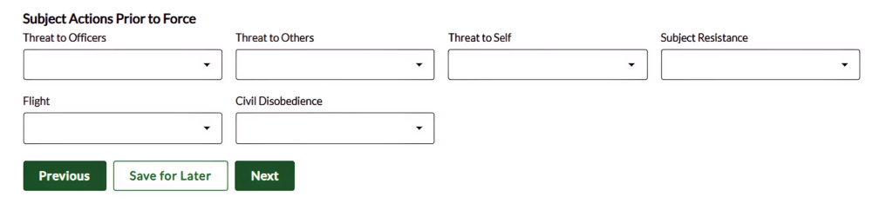
Officer Information
The Officer Information collects key details about the officer involved in this use of force report. This includes demographic information such as age, gender, and other relevant data. If multiple officers used force on the subject of this report, a separate Use of Force record must be created for each officer involved. If the officer involved in this report used force on multiple subjects, a separate Use of Force record must be created for each subject.
Officer information has 5 sections with up to 16 total fields to complete on this page. These fields capture information necessary for accurate documentation and reporting of UOF.
Section: Basic Officer Information
Basic subject information contains 3 fields: Officer Name, Subject Age, and Subject Gender.
Officer Name
Automatically populated based on the 'Officer Name' selected in Create a New Use of Force section.
Officer CJTC
Automatically populated based on the 'Officer Name' selected in Create a New Use of Force section.
- Officer Assignment
- Select the officer's assignment at the time of the use of force event by selecting one of the following options:
- Patrol
Definition: General law enforcement duties, including response to calls for service.
Traffic
Definition: Duties primarily focused on traffic enforcement and crash/collision response.
Administrative
Definition: Non-field duties such as supervision and training.
Specialty
Definition: Assignment to a specialized unit, such as SWAT.
Officer Year of Birth
Automatically populated based on the 'Officer Name' selected in Create a New Use of Force section. Year of birth is pulled from the officer's WADEPS profile, which is linked to their CJTC records. WADEPS will use this information to calculate age in the public dashboard.
Officer Gender
Automatically populated based on the 'Officer Name' selected in Create a New Use of Force section. Gender is pulled from the officer's WADEPS profile, which is linked to their CJTC records. Officer Verified Race/Ethnicity
Automatically populated based on the 'Officer Name' selected in Create a New Use of Force section. Race and ethnicity is pulled from the officer's WADEPS profile, which is linked to their CJTC records.
Officer Years
Indicates officer's total years of experience in law enforcement, including within and outside of Washington State. Enter as whole number. Enter 0 if less than one year.
Section: Officer Condition
This section contains one field: Injury.
Injury
In this field, record any injuries the officer sustained during the reportable use of force event.
- Select all that apply from the following options:
- None
Definition: no injuries during the reportable use of force event.
Apparent minor injury
Definition: minor injuries that can be treated on scene with basic first aid (bandaging).
- Examples: minor cuts or bruises
- Severe laceration
Definition: cuts or wounds that require professional medical treatment, such as stitches or staples.
Examples: a deep cut on the arm that exposes muscle or fat tissue, a large, jagged wound with uncontrolled bleeding, a torn lip or ear that requires reconstructive closure.
Loss of teeth
Definition One or more teeth were dislodged or broken as a result of the use of force event.
Canine bite
Definition: injury from a dog bite during the incident, excluding a law enforcement agency K- 9.
Apparent broken bones
Definition: suspected or confirmed fractures observed at the scene or confirmed later.
Possible internal injury
Definition: signs or complaints suggesting internal trauma, even if not confirmed at the time of the use of force event.
Examples: signs of internal trauma could include but are not limited to difficulty breathing/shortness of breath, abdominal pain or tenderness, chest pain, vomiting or coughing up blood, loss of bladder or bowel control, and complaints of pain without visible injury.
Unconscious
Definition: the subject lost consciousness during or immediately after the use of force event.
Gunshot wound
Definition: any injury caused by a projectile resulting from the discharge of a firearm. This includes injuries where a bullet or bullet fragment strikes or causes physical harm to the body.
Note: This classification does not include injuries caused solely by the sound, shockwave, or muzzle blast of a firearm (e.g., ruptured eardrums or burns from close-range discharge). Such injuries should be documented under 'Other Major Injury' or 'Apparent Minor Injury' depending on the severity of injury and whether the injury requires medical treatment beyond basic first aid.
Death
Definition: the officer died during or as a result of the use of force event.
Other major injury
Definition: any significant injury not classified as an Apparent Minor Injury and not captured by the categories listed above. Please provide a clear description.
Proceeding to the Submit for Supervisor Review Section
Once all required fields have been completed, select the 'Next' button located at the bottom left of your screen
Clicking 'Next' will save the entered information and take you to the Submit for Supervisor Review section of the WADEPS form, where you will officially submit the record to be reviewed by your agency's designated supervisors.
Submit for Supervisor Review
This page allows you to officially submit the use of force record to be reviewed by your agency's designated supervisor(s).
You have two options on this page:
Submit for Review: Select this button to officially submit the record. Once submitted, changes to the record can only be made by agency supervisors.
Go Back: Select this button if you need to review or edit your entries before submission.
Batch Upload Process
In this chapter, you will learn how to prepare the batch upload template, complete required record details, upload the file, and route the records for supervisor approval.
Batch Upload
To upload multiple use of force reports, select Batch Upload from the top left of and bottom left (under home) of any WADEPS screen.
This will take you to the Batch Upload Records page.
Download the Batch Upload Template
Select 'Download Template' on the left middle of the screen.
Download the Batch Upload Template
Select 'Download Template' on the left middle of the screen.
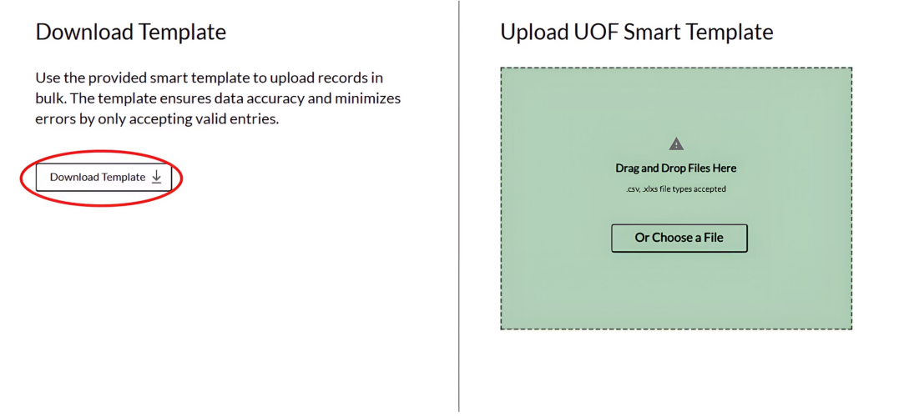
Complete the Batch Upload Template
To ensure a successful batch upload without errors, you must enter valid responses for the required fields. These fields include officer_cjtc, agency_name, incident_number, and subject_id.
Incident Information
Columns A through CV in the batch upload spreadsheet correspond to the Incident-Based Items in Section 1 of the Data Manual.
If working directly in a CSV or text file (not in Excel), do not include commas in entries, as they can disrupt the file structure. Excel handles commas automatically when saving.
agency_name
Start typing the agency name. As you type, a list of matching agency names will appear. Click on the correct agency name from the list to select it.
This field is required.
ori (Originating Agency Identifier)
This field will be automatically completed when the spreadsheet is uploaded. If your agency does not have an ORI, the system will default to using your WADEPS AGENCY ID instead.
wadeps_agency_id
This field will be automatically completed when the spreadsheet is uploaded.
incident_number
Enter the unique incident number assigned by your agency's CAD system.
This field is required. If left blank, the batch upload will fail.
Incident_date
Enter the date the incident occurred in YYYY-MM-DD format. This should match the incident date in CAD, not necessarily when the use of force event occurred.
incident_time
Enter the time the officer was dispatched or the time the officer indicated they initiated the call or stop.
Use the HH:MM format.
contact_reason
Select one of four reasons for the initial contact that led to the use of force event.
Public Request for Service
Definition: The contact originated from a member of the public requesting assistance or reporting an incident (typically by phone or in-person).
Agency Request for Service
Definition: The contact was initiated based on a request from another agency or department.
Unit or Officer-Initiated
Definition: The officer initiated the contact without a prior external request (e.g., self-initiated stop).
Planned Activity
Definition: The contact occurred as part of a pre-scheduled or coordinated activity (e.g., warrant service, tactical operation).
response_type
Select the level of cause the officer believed they had for the initial contact. You will choose from one of the following four response options:
Social Contact
Definition: a voluntary interaction between an officer and a member of the public.
Legal implication: there is no legal obligation for the individual to stop, answer questions, or remain at the scene.
Reasonable Suspicion
Definition: The officer had specific, articulable facts that would lead a reasonable person to believe that criminal activity may be occurring or has occurred (Criminal Justice Training Commission, n.d.).
Legal Implication: Justifies brief stops and questioning but not an arrest without further justification.
Probable Cause
Definition: The officer has strong evidence that would lead a reasonable person to believe that an individual has committed, is committing, or is about to commit a crime. Legal Implication: Justifies significant intrusions on a person's liberty, such as searches, seizures, or arrest.
Involuntary Treatment Act and Other Commitment for Behavioral Health
Definition: Legal authority under chapters 71.05, 10.77, and 71.34 RCW that allows peace officers to take individuals into custody for mental health evaluation or treatment when the person, as a result of a mental disorder, presents an imminent likelihood of serious harm to themselves or others, or is gravely disabled (unable to provide for their basic needs of health or safety).
Legal Implication: A peace officer may use physical force, provided they exercise reasonable care, to the extent necessary to take a person into custody, transport a person for evaluation or treatment, or provide other assistance under civil commitment laws. The use of force must be reasonable, proportionate, and follow established protocols for dignity and safety.
Incident_location_county
Start typing the county name. As you type, a list of matching counties will appear. Click on the correct county from the list to select it. If the UOF event occurred outside of the state, select Out of State.
Incident_location_detail
If Out of State was not selected in Incident_location_county, select the option that best describes the specific location of the incident. The available options include:
Unincorporated Area
Definition: An area not governed by a local municipality (city or town).
- State HWY
- Interstate HWY
- City
Definition: Any municipality with its own local government (such as a city or town).
Incident_location_detail_city
If 'City' is selected in the Incident_location_detail column, the Incident_location_detail_city column must be completed.
Start typing the city name. As you type, a list of matching cities will appear. Click on the correct city from the list to select it. location_type
- Select whether the use of force event occurred:
- Indoor
- Outdoor
- Both
- location_type_indoor
If 'Indoor' or 'Both' was selected in location_type, indicate the option that best describes where the use of force event occurred.
- Select one of the following options:
- Single Family Residence
Definition: A detached home or standalone residential structure.
- Apartment or Multifamily residence
- Definition: A unit within a multi-unit residential building such as an apartment complex or duplex
- Commercial/Business Premises
Definition: A business or commercial property such as a restaurant, office, etc.
Government Facility
Definition: A government-operated indoor space such as a courthouse, public school/university, municipal offices.
Medical Facility
Definition: Includes clinics, hospitals, urgent care centers, or other licensed medical settings.
Transit Facility:
Definition: Indoor transit areas such as indoor train stations, bus terminals, airport terminals, etc.
Other
Definition: Use this option if the location does not fit any of the categories above.
location_type_indoor_other
If selected 'Other' in location_type_indoor, specify the type of location here.
location_type_outdoor
If 'Outdoor' or 'Both' is selected in Initial Incident Type field, an additional field, Outdoor Location, will appear.
- In this field, select the option that best describes where the use of force occurred. Choose one of the following options:
- Residential Private Property
- Definition: yard, driveway, or other outdoor area associated with private residence.Commercial Private Property
Definition: parking lots, outdoor spaces of businesses or commercial entities.
- Government Property
- Definition: Outdoor areas surrounding government buildings (such as court houses, schools/universities, etc.)
- Public Right of Way
- Definition: Highway, street, sidewalk, boat launch, or other publicly accessible travel routes
- Transit Property
Definition: Bus stops, transit center platforms, park and ride lots, etc.
Public Lands
Definition: Parks, state/national forests, etc.
Other:
Definition: Use this option if none of the above categories accurately describe the outdoor location.
location_type_outdoor_other
If selected 'Other' in location_type_indoor, specify the type of location here.
- Initial Incident Type
- Field Name Prefix: incident_type_
In these fields, indicate the nature of the initial incident that led to officer involvement. This includes either the reason the officer was dispatched or the reason for the self-initiated contact.
Instruction: For each category below in the table below, select ' Yes' if it applies to the initial incident type or ' No ' if it does not. Multiple categories may apply.
Column Name Description Options
incident_type_offense_against_person Incident involving harm or threats of harm to a person (e.g., assault, homicide, robbery).
Yes / No
incident_type_property_offense 'To willfully or maliciously destroy, damage, deface, or otherwise injure real or personal property without the consent of the owner or the person having custody or control of it'.
Yes / No
incident_type_public_order_offense Incident involving disruption of social norms (e.g., disorderly conduct, public intoxication).
Yes / No
incident_type_vehicle_stop Incident involving stopping a motor or non-motor vehicle for an alleged violation.
Yes / No
incident_type_vehicle_stop Incident involving stopping a pedestrian for an alleged violation.
Yes / No
incident_type_civil_caretaking Incident involving wellness checks, civil infractions, or order enforcement.
Yes / No
incident_type_warrant Incident involving serving a judicial warrant (arrest or search).
Yes / No
incident_type_other Use only if none of the above apply. Provide explanation in the next column.
- Yes / No
- incident_type_other_specify Short explanation of the incident type if "Other" is selected. Text
- Important Note
The Incident Details categories below include short definitions for training purposes. These summaries are from the FBI's Uniform Crime Reporting (UCR) Program and are intended as plain-language descriptions. Washington State law (Revised Code of Washington – RCW) provides the controlling legal definitions of crimes.
Officers and agencies must rely on RCWs when classifying incidents and completing UOF reports.
Where applicable, the relevant RCW chapter(s) or section(s) are listed for further detail.
- Incident Detail: Offense Against Person
- Field Name Prefix: incident_detail_offense_against_person
If 'Yes' was selected in the incident_type_offense_against_person column, you need to specify the offense.
Instruction:
For each category below, select 'Yes' if it applies to the incident or 'No' if it does not. Multiple categories may be marked 'Yes'.
If the specific offense against person is not listed below, please select 'Yes' in incident_detail_offense_against_person field and describe the offense in the specify field. The following table spans two pages.
Column Name Description Options
incident_detail_offense_against_person_assault Involves an 'unlawful attack by one person upon another'.
Includes offenses defined in Chapter 9A.36 RCW.
Yes / No
incident_detail_offense_against_person_homicide Involves the killing of an individual (e.g., murder, homicide by abuse, manslaughter).
Includes offenses defined in Chapter 9A.32 RCW.
Yes / No
incident_detail_offense_against_person_rape Involves 'the carnal knowledge of a person, without the consent of the victim, including instances where the victim is incapable of giving consent because of his/her' age or because of his/her temporary or permanent mental or physical incapacity.
Includes offenses defined in RCW 9A.44.040, 9A.44.050, 9A.44.060, 9A.44.073, 9A.44.076, and 9A.44.079.
Yes / No
incident_detail_offense_against_person_robbery Involves the 'taking, or attempting to take, anything of value under confrontational circumstances from the control, custody, or care of another person by force or threat of force or violence and/or by putting the victim in fear of immediate harm?.
Includes offenses defined in RCW 9A.56.190–RCW 9A.56.210.
- Yes / No
- incident_detail_offense_against_person_civil_order_violati on
Involves violation of a court-issued civil protection order.
Yes / No
incident_detail_offense_against_person_other Use only if none of the above apply. Provide an explanation in the next field.
Yes / No
incident_detail_offense_against_person_other_specify Short explanation of the offense if 'Other' is Yes.
- Text
- Incident Detail: Property Offense
- Field Name Prefix: incident_detail_property_offense
If 'Yes' was selected in the incident_type_property_offense column, you need to specify the offense.
Instruction:
For each category below, select 'Yes' if it applies to the incident or 'No' if it does not. Multiple categories may be marked 'Yes.'
If the specific property offense is not listed below, please select 'Yes' in the incident_detail_property_offense_other field and describe the offense in the specify field. The following table spans two pages.
Column Name Description Options
incident_detail_property_offense_arson Involves 'the unlawful and intentional damage, or attempt to damage, any real or personal property by fire or incendiary device'.
Includes offenses defined in RCW 9A.48.020–RCW 9A.48.030.
Yes / No
incident_detail_property_offense_burglary Involves 'the unlawful entry into a building or other structure with the intent to commit a felony or a theft'.
Includes offenses defined in RCW 9A.52.020, RCW 9A.52.025, and RCW 9A.52.030.
Yes / No
incident_detail_property_offense_theft Involves the 'unlawful taking carrying, leading, or riding away of property from the possession, or constructive possession, of another person'.
Includes offenses defined in RCW 9A.56.020–RCW 9A.56.060.
Yes / No
incident_detail_property_offense_mischief Involves willful damage, destruction, or defacement of property.
Includes offenses defined in RCW 9A.48.070–RCW 9A.48.090.
Yes / No
incident_detail_property_offense_trespassing Involves unlawfully entering a land, a dwelling, or other real property.
Includes offenses defined in RCW 9A.52.070–RCW 9A.52.080.
Yes / No
incident_detail_property_offense_vehicle_theft_prowl Involves vehicle theft or unlawfully entering a vehicle to commit a crime against a person or property.
Includes offenses defined in RCW 9A.56.065 and RCW 9A.52.095–RCW 9A.52.10.
Yes / No
incident_detail_property_offense_other Select 'Yes' if none of the above apply and provide an explanation in the next field.
Yes / No
incident_detail_property_offense_other_specify Short explanation of the offense if 'Other' is selected.
- Text
- Incident Detail: Public Order Offense
- Field Name Prefix: incident_detail_public_order_offense
If 'Yes' was selected in the incident_type_public_order_offense column, you need to specify the offense .
Instructions: For each category below, select 'Yes' if it applies to the incident or 'No' if it does not. Multiple categories may be marked 'Yes.'
If the specific public order offense is not listed below, please select 'Yes' in the incident_detail_public_order_offense_other field and describe the offense in the specify field. The following table spans two pages.
Column Name Description Options
incident_detail_public_order_offense_public_disturbance Involves disrupting peace, public assemblies, or social order.
Includes offenses defined in RCW 9A.84.010, RCW 9A.84.020, RCW 9A.84.030, RCW 9A.84.040, and other related statutes as applicable.
Yes / No
incident_detail_public_order_offense_drug_related Involves The violation of laws prohibiting the production, distribution, and/or use of certain controlled substances and the equipment or devices utilized in their preparation and/or use.
Includes offenses defined in Chapter 69.50 RCW, Chapter 69.41 RCW, Chapter 69.52 RCW, and other related statutes as applicable.
Yes / No
incident_detail_public_order_offense_sex_related Includes indecent exposure, prostitution, and other related offenses.
Includes offenses defined in RCW 9A.88.010, RCW 9A.88.030–RCW 9A.88.110, and other related statutes as applicable.
Yes / No
incident_detail_public_order_offense_weapon_related This refers to the violation of laws or ordinances that prohibit the manufacture, sale, purchase, transportation, possession, concealment, or use of firearms, cutting instruments, explosives, incendiary devices, or other deadly weapons.
Includes offenses defined in Chapter 9.41 RCW and other related statutes as applicable.
Yes / No
incident_detail_public_order_offense_transit_related Offenses that occur while on transit vehicles and/or transit facilities, such as drinking alcohol, obstructing transit vehicles, and other related offenses.
Includes offenses defined in RCW 9.91.020, RCW 9.91.023, RCW 9.91.025, and other related statutes as applicable.
Yes / No
incident_detail_public_order_offense_other Select 'Yes' if none of the above apply and provide an explanation in the next field.
Yes / No
incident_detail_public_order_offense_other_specify Short explanation of the offense if 'Other' is selected.
- Text
- Incident Detail: Vehicle Offense
- Field Name Prefix: incident_detail_vehicle_offense
If 'Yes' was selected in the incident_type_vehicle_stop column, you need to specify the offense.
Instruction: For each category below, select 'Yes' if it applies to the incident or 'No' if it does not. Multiple categories may be marked 'Yes.'
If the specific vehicle offense is not listed below, please select 'Yes' in the incident_detail_vehicle_offense_other field and describe the offense in the specify field.
Column Name Description Options
incident_detail_vehicle_offense_dui Driving under the influence of alcohol and/or drugs.
Includes offenses defined in RCW 46.61.502, RCW 46.61.503, and RCW 46.61.504.
Yes / No
incident_detail_vehicle_offense_accident Collision or accident occurring on public or private roadway.
Includes offenses defined in RCW 46.52.020–RCW 46.52.030 and other related statutes as applicable.
Yes / No
incident_detail_vehicle_offense_moving_violation An infraction related to the operation of a vehicle while it is in motion.
Includes offenses defined in Chapter 46.61 RCW and other related statutes as applicable.
Yes / No
incident_detail_vehicle_offense_non_moving_violation An infraction not dependent on the vehicle being in motion.
Includes offenses defined in Title 46 RCW, including Chapter 46.61 RCW, and other related statutes as applicable.
Yes / No
incident_detail_vehicle_offense_other_specify Short explanation of the offense if 'Other' is selected.
- Text
- Incident Detail: Civil Caretaking
Field Name Prefix: incident_detail_civil_caretakingIf 'Yes' was selected in the incident_type_civil_caretaking column, you need to specify the offense.
Instruction: For each category below, select 'Yes' if it applies to the incident or 'No' if it does not. Multiple categories may be marked 'Yes.'
If the specific type of civil caretaking is not listed below, please select 'Yes' in the incident_detail_civil_caretaking_other field and describe the situation in the specify field.
Column Name Description Options
incident_detail_civil_caretaking_mental_health_wellness_check Checking on the status or well-being of a person.
Yes / No
incident_detail_civil_caretaking_civil_infraction Involves a violation that results in fines and not criminal charges.
Yes / No
incident_detail_civil_caretaking_eviction_order_enforcement Involves enforcement of an eviction order.
Yes / No
incident_detail_civil_caretaking_eviction_order_enforcement Involves enforcement of a domestic-related protection or restraining order.
Yes / No
incident_detail_civil_caretaking_other Select 'Yes' if none of the above apply and provide an explanation in the next field.
Yes / No
incident_detail_civil_caretaking_other_specify Short explanation of the situation if 'Other' is selected.
- Text
- Section: Arrest Information
- arrest
- Indicate the outcome of the officer's contact with the subject by selecting one of the following options:
- Arrested
Definition: subject was taken into custody for a criminal offense.
Civil Detention
Definition: subject was taken into custody for non-criminal offense reasons, such as mental health evaluation.
No Arrest or Detention
Definition: subject was not taken into custody.
- arrest_reason
- Field Name Prefix: arrest_reason
In these fields, if 'Arrested' is selected in the arrested field, you must specify the reasons for the arrest.
Instruction: For each category below, select 'Yes' if it applies to the incident or 'No' if it does not. Multiple categories may be marked 'Yes.'
If the specific arrest reason is not listed below, please select 'Yes' in the arrest_reason_other field and describe the reason in the specify field.
Column Name Description Options
arrest_reason_obstruction_resistance Willfully hindering, delaying, or obstructing a law enforcement officer; resisting arrest.
Yes / No
arrest_reason_person_crime Offense against a person (involving harm or threats of harm to an individual).
Yes / No
arrest_reason_property_crime Property offense (involving theft, damage, or destruction of property).
Yes / No
arrest_reason_vehicle_violation Public order offense (disturbing the peace, disorderly conduct, public intoxication, etc.).
Yes / No
arrest_reason_vehicle_violation Vehicle offense (e.g., vehicle theft or unlawfully entering a vehicle to commit a crime).
- Yes / No
- arrest_reason_warrant Based on a judicially authorized warrant. Yes / No
arrest_reason_other Select 'Yes' if none of the above apply and provide an explanation.
- Yes / No
- arrest_reason_other_specify Short explanation of the situation if 'Other' is selected. Text
- Arrest Detail: Offense Against Person
- Field Name Prefix: arrest_detail_offense_against_person
If 'Yes' was selected in the arrest_reason_person_crime column, you need to specify the offense.
Instruction: For each category below, select 'Yes' if it applies to the arrest or 'No' if it does not. Multiple categories may be marked 'Yes.'
If the specific offense is not listed below, please select 'Yes' in the arrest_ detail_offense_against_person_other field and describe the offense in the specify field. The following table spans two pages.
Column Name Description Options
arrest_detail_offense_against_person_assault Involves an 'unlawful attack by one person upon another'.
Includes offenses defined in Chapter 9A.36 RCW.
Yes / No
arrest_detail_offense_against_person_homicide Involves the killing of an individual (e.g., murder, homicide by abuse, manslaughter).
Includes offenses defined in Chapter 9A.32 RCW.
Yes / No
arrest_detail_offense_against_person_rape Involves 'the carnal knowledge of a person, without the consent of the victim, including instances where the victim is incapable of giving consent because of his/her' age or because of his/her temporary or permanent mental or physical incapacity.
Includes offenses defined in RCW 9A.44.040, 9A.44.050, 9A.44.060, 9A.44.073, 9A.44.076, and 9A.44.079.
Yes / No
arrest_detail_offense_against_person_robbery Involves the 'taking, or attempting to take, anything of value under confrontational circumstances from the control, custody, or care of another person by force or threat of force or violence and/or by putting the victim in fear of immediate harm?.
Includes offenses defined in RCW 9A.56.190–RCW 9A.56.210.
- Yes / No
- arrest_detail_offense_against_person_civil_order_violati on
Involves violation of a court-issued civil protection order.
Yes / No
arrest_detail_offense_against_person_other Select 'Yes' if none of the above apply and provide an explanation.
Yes / No
arrest_detail_offense_against_person_other_specify Short description of the offense if 'Other' is selected.
- Text
- Arrest Detail: Offense Against Property
- Field Name Prefix: arrest_detail_property_offense
If you selected 'Yes' 'in the arrest_reason_property_crime column, you need to specify the offense.
Instruction: For each category below, select 'Yes' if it applies to the arrest or 'No' if it does not. Multiple categories may be marked 'Yes.'
If the specific property-related offense is not listed below, please select 'Yes' in the arrest_detail_property_offense_other field and describe the offense in the arrest_detail_property_offense_other_specify field. The following table spans two pages.
Column Name Description Options
arrest_detail_property_offense_arson Involves 'the unlawful and intentional damage, or attempt to damage, any real or personal property by fire or incendiary device'.
Includes offenses defined in RCW 9A.48.020– RCW 9A.48.030.
Yes / No
arrest_detail_property_offense_burglary Involves 'the unlawful entry into a building or other structure with the intent to commit a felony or a theft'.
Includes offenses defined in RCW 9A.52.020, RCW 9A.52.025, and RCW 9A.52.030.
Yes / No
arrest_detail_property_offense_theft Involves the 'unlawful taking carrying, leading, or riding away of property from the possession, or constructive possession, of another person'.
Includes offenses defined in RCW 9A.56.020– RCW 9A.56.060.
Yes / No
arrest_detail_property_offense_mischief Involves willful damage, destruction, or defacement of property.
Includes offenses defined in RCW 9A.48.070– RCW 9A.48.090.
Yes / No
arrest_detail_property_offense_trespassing Involves unlawfully entering a land, a dwelling, or other real property.
Includes offenses defined in RCW 9A.52.070– RCW 9A.52.080.
- Yes / No
- arrest_detail_property_offense_vehicle_theft_pro wl
Involves vehicle theft or unlawfully entering a vehicle to commit a crime against person or property.
Includes offenses defined in RCW 9A.56.065 and RCW 9A.52.095–RCW 9A.52.10.
Yes / No
arrest_detail_property_offense_other Select 'Yes' if none of the above apply and provide an explanation.
Yes / No
arrest_detail_property_offense_other_specify Short description of the offense if 'Other' is selected.
- Text
- Arrest Detail: Public Order Offense
- Field Name Prefix: arrest_detail_public_order_offense
In these fields, if 'Offense Against the Public Order' is selected in the arrest_reason_ fields, you must specify the offense(s) that led to the arrest.
Instruction: For each category below, select 'Yes' if it applies to the arrest or 'No' if it does not. Multiple categories may be marked 'Yes.'
If the specific offense is not listed below, please select 'Yes' in the arrest_detail_public_order_offense_other field and describe the offense in the arrest_detail_public_order_offense_other_specify field.
Column Name Description Options
arrest_detail_public_order_offense_public_disturbance Includes disorderly conduct, false reporting, failure to disperse and other offenses.
Includes offenses defined in RCW 9A.84.010, RCW 9A.84.020, RCW 9A.84.030, RCW 9A.84.040, and other related statutes as applicable.
Yes / No
arrest_detail_public_order_offense_drug_related Involves the violation of laws prohibiting the production, distribution, and/or use of certain controlled substances and the equipment or devices utilized in their preparation and/or use.
Includes offenses defined in Chapter 69.50 RCW, Chapter 69.41 RCW, Chapter 69.52 RCW, and other related statutes as applicable.
Yes / No
arrest_detail_public_order_offense_sex_related Includes indecent exposure, prostitution, and other related offenses.
Includes offenses defined in RCW 9A.88.010, RCW 9A.88.030–RCW 9A.88.110, and other related statutes as applicable.
Yes / No
arrest_detail_public_order_offense_weapon_related Refers to the violation of laws or ordinances that prohibit the manufacture, sale, purchase, transportation, possession, concealment, or use of firearms, cutting instruments, explosives, incendiary devices, or other deadly weapons.
Includes offenses defined in Chapter 9.41 RCW and other related statutes as applicable.
Yes / No
arrest_detail_public_order_offense_transit_related Involves offenses that occur while on transit vehicles and/or transit facilities, such as drinking alcohol, obstructing transit vehicles, and other related offenses.
Includes offenses defined in RCW 9.91.020, RCW 9.91.023, RCW 9.91.025, and other related statutes as applicable.
Yes / No
arrest_detail_public_order_offense_other Select 'Yes' if none of the above apply and provide an explanation.
Yes / No
arrest_detail_public_order_offense_other_specify Short description of the offense if 'Other' is selected.
- Text
- Arrest Detail: Vehicle Offense
- Field Name Prefix: arrest_detail_vehicle_offense
In these fields, if 'Yes' is selected in the arrest_reason_vehicle_violation column, you must specify the offense(s) that led to the arrest.
Instruction: For each category below, select 'Yes' if it applies to the arrest or 'No' if it does not. Multiple categories may be marked 'Yes.'
If the specific offense is not listed below, please select 'Yes' in the arrest_detail_vehicle_offense_other field and describe the offense in the arrest_detail_vehicle_offense_other_specify field.
Column Name Description Options
arrest_detail_vehicle_offense_dui Involves driving under the influence of alcohol and/or drugs.
Includes offenses defined in RCW 46.61.502, RCW 46.61.503, and RCW 46.61.504.
Yes / No
arrest_detail_vehicle_offense_accident Collision or accident occurring on public or private roadway.
Includes offenses defined in RCW 46.52.020–RCW 46.52.030 and other related statutes as applicable.
Yes / No
arrest_detail_vehicle_offense_moving_violation An infraction related to the operation of a vehicle while it is in motion.
Includes offenses defined in Chapter 46.61 RCW and other related statutes as applicable.
Yes / No
arrest_detail_vehicle_offense_non_moving_violation An infraction not dependent on the vehicle being in motion.
Includes offenses defined in Title 46 RCW, including Chapter 46.61 RCW, and other related statutes as applicable.
Yes / No
arrest_detail_vehicle_offense_other Select 'Yes' if none of the above apply and provide an explanation.
Yes / No
arrest_detail_vehicle_offense_other_specify Short description of the offense if 'Other' is selected.
- Text
- domestic_violence_incident
In this section, you will indicate whether the incident was associated with domestic violence. You will select either Yes or No.
domestic_violence_arrest
This field only needs to be completed if 'Arrested' is selected in the arrested column.
When 'Arrested' is selected, you will be required to specify whether the arrest included domestic violence language. You will select either Yes or No.
officers_total
In this field, indicate the total number of officers physically present (on scene) at the time force was used on the subject of this report.
Enter a whole number from 1 to 99.
Count all officers present, regardless of whether they personally used force.
Do not include officers who arrived after the use of force incident occurred.
- Select one of the following:
- Yes
- No
Unknown.
Type of Force
Columns CW through DN in the Batch Upload spreadsheet correspond to the Type of Force Items described in Section 1 of the Data Manual.
Each type of force is listed as a separate Yes/No—you must mark 'Yes' if that specific type of force was used, and 'No' if it was not.
point
Definition: The officer pointed a conventional firearm (e.g., handgun, rifle) directly at the subject.
WADEPS Criteria: Report any instance where a firearm is pointed in an operational setting, excluding ready positions (e.g., low-ready, high-ready), and where a person other than law enforcement personnel could have been struck if the weapon was discharged. This may be judged by considering the likely trajectory as if a laser was mounted to the weapon.
Excludes:
Less-lethal weapons (e.g., bean bag shotguns, 40mm impact launchers).
Firearms held in a ready position (e.g., low-ready, high-ready).
discharge
Definition: The officer discharged a conventional firearm at or in the direction of a person.
Excludes: Less-lethal weapons (e.g., bean bag shotguns, 40mm impact launchers).
ECW
Definition: The officer used an electronic control weapon (ECS), such as a TASER, at or in the direction of a person.
Excludes: Displaying, holding, or aiming the ECS without discharging it.
chemical
Definition: The officer used a chemical agent—such as oleoresin capsicum (OC) spray (pepper spray), CS Gas (tear gas), or related irritant--against a person.
This includes any deployment where the chemical agent is used against a person or persons, regardless of whether it made contact.
Excludes: Displaying, holding, or aiming the chemical agent without discharging it.
Excludes:
Displaying, holding, or aiming the weapon without discharging it.
Electronic control weapons and OC sprays
impact:
Definition: The officer struck a person using an impact weapon or instrument, including a club, baton, flashlight, and other impact weapons.
Excludes:
Strikes using the officer's own body (e.g., punches, kicks, knee strikes).
- Use of a vehicle to strike or subdue a person
- strike
Definition: The officer used any part of their body to physically strike a person, including kicking, slapping, using closed fists, legs, or feet.
- Excludes: Takedown maneuvers (physical maneuvers used by law enforcement to take a subject to the ground)
- vehicle_person
Definition: The officer used a vehicle to intentionally strike a person.
vehicle_vehicle
Definition: The officer used a vehicle to intentionally strike another vehicle.
- Select from the following options:
- PIT maneuver under 40 MPH
- PIT maneuver 40 MPH or over
- Not a PIT maneuver
- canine
Definition: The officer deployed a canine by releasing it from the officer's physical control or had the canine under law enforcement control and it bites a person.
neck
Definition: The officer used a neck restraint or chokehold, as defined in RCW 10.166.020.
RCW 10.166.020 includes two distinct types:
Chokehold: 'The application of direct pressure to a person's trachea or windpipe for the purpose of restricting another person's airway' (Revised Code of Wash. § 10.166.020, 2021).
Neck Restraint: 'any vascular neck restraint or similar restraint, hold, or other tactic in which pressure is applied to the neck for purposes of restricting blood flow' (Revised Code of Wash. § 10.166.020, 2021).
- force_other
- This section contains a single open-text field titled 'Other Type of Force.'
- Use this field if:
the officer used a type of force that is not already captured in the standard Type of Force fields and the UOF resulted in great bodily harm, substantial bodily harm, or a fatality.
Pepper Impact Projectiles, commonly referred to as pepper balls, are deployed.
Instructions: If the officer used a force type not listed in the predefined categories (Type of Force) that resulted in great bodily, substantial bodily harm or a fatality, select "Yes".
- · Fatality
- · Great Bodily Harm
- · Substantial Bodily Harm
- Exception
Pepper impact projectiles (pepper balls) must always be documented in the " Other" field due to their hybrid nature, even when no injury occurs.
force_other_specify
If you select 'Yes' in the force_other column, you must provide a brief explanation of the other type of force used.
time_to_force
Definition: The approximate time that passes between the officer first interacting with the subject at the scene and the time force was first used. Select one of the following options:
- Immediate
- Less than 1 minute
- 1 – 5 minutes
- 6 – 10 minutes
- 11 minutes or more
- video
Indicate whether there is police-recorded footage of the use of force event. This includes recordings from body-worn cameras, dash cameras, or any other agency-authorized video devices.
Select Yes if any such video exists of the incident.
Select No if not such video exists.
Subject Information
Columns DO through FM in the template correspond to the Subject Information items in Section 3 of the Data Manual.
- Subject ID
- Enter subject's initials: First, Middle, Last. If initials are unavailable, enter 'unknown'
This field is required. If left blank, the batch upload will fail.
Subject Age
Enter the verified age of the subject in whole years only.
Do not include months or partial years
- Subject Gender
- Field Name Prefix: subject_gender_
In the Batch Upload spreadsheet, each gender available in WADEPS is represented as a separate Yes/No column, using the prefix above.
This field captures the subject's verified gender at the time of the use-of-force event.
Instruction:
For each category below, mark 'Yes' if that gender was verified, or 'No' if it was not.
You may select multiple options as applicable.
- Column Name Prefix Description Options
- subject_gender_male Male Yes / No
- subject_gender_female Female Yes / No
- subject_gender_nonbinary Non-Binary Yes / No
- subject_gender_transgender Transgender Yes / No
- subject_gender_unknown Unknown Yes / No
- Subject Perceived Race/Ethnicity
- Field Name Prefix: perceived_subject_race_ethnicity_
In the Batch Upload spreadsheet, each possible race or ethnicity is represented as a separate Yes/No column, using the prefix above.
This field captures the officer's perception of the subject's race(s) and/or ethnicity(ies) at the time of the use-of-force event.
Instruction:
For each of the categories below, mark 'Yes' if it reflects the officer's perception, or 'No' if it does not.
You may select multiple options as applicable.
- Column Name Prefix Description Options
- perceived_subject_race_ethnicity_american_indian_or_alaska_nat ive
- American Indian or Alaska Native
- Yes / No
- perceived_subject_race_ethnicity_asian Asian Yes / No
- perceived_subject_race_ethnicity_black_or_african_american Black or African American Yes / No
- perceived_subject_race_ethnicity_hispanic_or_latino Hispanic or Latino Yes / No
- perceived_subject_race_ethnicity_middle_eastern_or_north_afric an
- Middle Eastern or North African
- Yes / No
- perceived_subject_race_ethnicity_native_hawaiian_or_pacific_isl ander
- Native Hawaiian or Other Pacific Islander
- Yes / No
- perceived_subject_race_ethnicity_white White Yes / No
- perceived_subject_race_ethnicity_unknown Unknown Yes / No
- Subject Verified Race/Ethnicity
- Field Name Prefix: verified_subject_race_ethnicity_
In the Batch Upload spreadsheet, each verified race or ethnicity is represented as a separate Yes/No column using this prefix.
This field captures the verified race(s) and/or ethnicity(ies) of the subject at the time of the use-of- force event.
Instruction:
For each category below, mark 'Yes' if that race/ethnicity was verified, or 'No' if it was not.
You may select multiple options as applicable.
- If the subject was unable or unwilling to provide the information, verification may be obtained from:
- Family members
- Others present at the scene
- Column Name Prefix Description Options
- verified_subject_race_ethnicity_american_indian_or_alaska_nat ive
- American Indian or Alaska Native Yes / No
- verified_subject_race_ethnicity_asian Asian Yes / No
- verified_subject_race_ethnicity_black_or_african_american Black or African American Yes / No
- verified_subject_race_ethnicity_hispanic_or_latino Hispanic or Latino Yes / No
- verified_subject_race_ethnicity_middle_eastern_or_north_afric an
- Middle Eastern or North African Yes / No
- verified_subject_race_ethnicity_native_hawaiian_or_pacific_isl ander
- Native Hawaiian or Other Pacific Islander
- Yes / No
- verified_subject_race_ethnicity_white White Yes / No
- verified_subject_race_ethnicity_unknown Unknown Yes / No
- Tribal Affiliation
In this field, indicate whether the subject is a member of a federally or state-recognized Tribe.
- Select one of the following options:
- Yes
- No
- Refused
- Unknown
- Guidance for Verification:
Use official records, tribal-issues IDs or enrollment cards, to confirm the information when possible.
If official records are not available, subject tribal affiliation status can be confirmed with the subject, family members, or others on scene.
- Subject Injury
- Field Name Prefix: subject_injury_
In the Batch Upload spreadsheet, each injury type is represented by a separate Yes/No column using this prefix.
Instruction:
For each injury type listed below, select 'Yes' if the subject sustained that injury, or 'No' if not.
Multiple injury types may be selected for a single subject.
- Column Name Description & Examples Options
- subject_injury_apparent_minor_inj ury
- Apparent Minor Injury: Minor injuries treatable with basic first aid (e.g., cuts, bruises)
- Yes / No
- subject_injury_severe_laceration Severe Laceration: Cuts requiring stitches or staples (e.g., deep gashes, torn ear/lip)
- Yes / No
- subject_injury_loss_of_teeth Loss of Teeth: One or more teeth dislodged or broken due to use of force
- Yes / No
- subject_injury_canine_bite Canine Bite: Injury from police dog bite, regardless of release command
- Yes / No
- subject_injury_apparent_broken_b ones
- Apparent Broken Bones: Suspected or confirmed fractures Yes / No
subject_injury_internal_injury Possible Internal Injury: Suspected internal trauma (e.g., difficulty breathing, abdominal pain, vomiting blood)
- Yes / No
- subject_injury_unconscious Unconscious: Subject lost consciousness during or immediately after the event
- Yes / No
- subject_injury_gunshot_wound Gunshot Wound: Physical injury caused by a bullet or bullet fragment
- Yes / No
- subject_injury_death Death: Subject died during or as a result of the use of force event
- Yes / No
subject_injury_major_other Other Major Injury: Significant injury not captured by other categories. Requires explanation.
- Yes / No
- subject_injury_major_other_specif y
Specify Other Major Injury: If 'Yes' is selected for subject_injury_major_other, provide a brief description here.
Text
subject_injury_unknown Unknown: The subject's injury status is unknow because the subject has not been identified.
- Subject Impairment
- Field Name Prefix: subject_impairment_
In the Batch Upload spreadsheet, each type of perceived impairment is represented by a separate Yes/No column using this prefix.
This field captures the officer's perception of any impairments observed in the subject at the time of the use-of-force event.
Instruction: For each category below, select 'Yes' if the officer observed that type of impairment, or 'No' if not.
More than one type may be selected.
- Column Name Description & Examples Options
- subject_impairment_none None: No observable signs of impairment Yes / No
- subject_impairment_alcohol Alcohol: Appears impaired by alcohol (e.g., slurred speech, smell of alcohol, unsteady gait)
- Yes / No
- subject_impairment_drugs Drugs: Appears impaired by drugs (e.g., erratic behavior, dilated pupils, hyperactivity, lethargy)
- Yes / No
- subject_impairment_mental_health Mental Health: Appears to be experiencing a mental health crisis (e.g., disorientation, paranoia)
- Yes / No
subject_impairment_unknown Unknown: Signs of impairment present, but the source cannot be determined.
Note: 'Yes' can also be selected when the subject has not been identified.
- Yes / No
- subject_armed
In this field, record whether the subject was believed by the officer to be armed at the time of the use of force incident , regardless of whether a weapon was later found or confirmed.
- Response Options:
- Yes
Definition: the officer believed the subject had a weapon.
- No
- Definition: the officer did not believe the subject had a weapon. Subject Weapon Type
Field Name Prefix: subject_weapon_type_ In the Batch Upload spreadsheet, each weapon type is represented as a separate Yes/No column using this prefix.
This field records any types of weapons or armaments that were found on the subject or used by the subject during the use-of-force event.
Instruction:
For each weapon type below, select 'Yes' if the subject possessed or used that type of weapon, or 'No' if not.
- Multiple weapon types may be marked 'Yes.'
- Column Name Description & Examples Options
- subject_weapon_type_none None: No weapon was possessed or used Yes / No
- subject_weapon_type_blunt_object Blunt Object: Impact weapons (e.g., bat, pipe, stick, club)
- Yes / No
- subject_weapon_type_edged_object Edged Object: Objects with a sharp edge or point (e.g., knife, box cutter, machete)
- Yes / No
- subject_weapon_type_ecw ECW (Electronic Control Weapon): Devices delivering electric shock (e.g., taser, stun gun)
- Yes / No
- subject_weapon_type_chemical_explosive Chemical/Explosive: Pepper spray, tear gas, homemade explosives, Molotov cocktails
- Yes / No
subject_weapon_type_projectile Projectile: Thrown or launched objects (e.g., rocks, bottles, bean bag rounds, slingshots, rubber bullets)
- Yes / No
- subject_weapon_type_firearm Firearm: Any operable/inoperable firearm (e.g., handgun, shotgun, rifle)
- Yes / No
subject_weapon_type_vehicle Vehicle: Used or attempted to be used as a weapon (e.g., swerving at or accelerating toward officers or others)
Yes / No
Subject_weapon_type_unknown Unknown: Select 'Yes' if the subject has not been identified and it is not possible to determine whether the subject possessed a weapon.
Yes/ No
- Select one of the following options:
- None
Definition: Subject did not flee or attempt to flee prior to the use of force.
Flight or Attempted Flight
Definition: Subject fled or tried to flee from officers prior to the use of force.
Examples: Running, walking away quickly while ignoring commands, fleeing in a vehicle, or other deliberate efforts to escape.
subject_threat_officers
In this field, record the highest level of imminent threat the subject posed to officers prior to the use of force.
- Select one of the following options:
- None
Definition: No observable threat to officers.
Verbal Threat
Definition: Subject made verbal statements indicating intent to harm officers.
Examples: Threats to fight, attack, or kill.
Threatening Posture/Furtive Movements
Definition: Subject exhibited aggressive or suspicious physical behavior.
Examples: Subject assumes fighting stance, reaches into pockets or waistband in a threatening or evasive manner, etc.
Assault:
Definition: Subject made physical contact or attempted to strike, grab, or otherwise attack an officer.
Use or display of a less-lethal weapon
Definition: Subject used or displayed objects capable of causing harm but not believed to be lethal or likely to cause serious bodily injury.
Examples: Sticks, bottles, rocks, chair, etc.
Use or display of deadly weapon
Definition: Subject used or displayed a firearm, knife, or any object the officer believed could be lethal or cause serious bodily injury.
- Select one of the following options:
- None
Definition: No observable threat to other persons.
Verbal Threat
Definition: Subject made verbal statements indicating intent to harm others.
Examples: Threats to fight, attack, or kill.
Threatening Posture/Furtive Movements
Definition: Subject exhibited aggressive or suspicious physical behavior toward others.
Examples: Subject assumes fighting stance, reaches into pockets or waistband in a threatening or evasive manner, etc.
Assault
Definition: Subject made physical contact or attempted to strike, grab, or otherwise attack another person.
Use or display of a less-lethal weapon
Definition: Subject used or displayed objects capable of causing harm but not believed to be lethal or likely to cause serious bodily injury,
Examples: Sticks, bottles, rocks, chair, etc.
Use or display of deadly weapon
Definition: Subject used or displayed a firearm, knife, or any object the officer believed could be lethal or cause serious bodily injury.
- Select one of the following options:
- None
Definition: No observable threat to self.
Verbal Threat of Self-Harm
Definition: Subject made verbal statements indicating intent to harm or kill themselves.
Examples: Expressing suicidal thoughts or intent.
Self-Harm or Attempted to Self-Harm
Definition: Subject engaged in or attempted to engage in actions intended to cause self-injury.
Examples: Cutting, hitting themselves, attempting to jump from a height, holding a weapon to themselves, etc.
- Select one of the following options:
- No resistance
Definition: Subject complied with officer commands and did not resist verbally or physically.
Verbal resistance or passive resistance
Definition: Subject refused to comply with commands through words or non-violence physical behavior.
Examples: Going limp, sitting down, refusing to move without threatening actions, etc.
Threatening Posture or Verbal Threats
Definition: Subject made verbal threats or displayed threatening stances or gestures indicating potential threat to harm the officer.
Examples: Fighting stances, verbal threats of assault, etc.Physical non-compliance or flight
Definition: Subject engaged in physical actions to avoid control.
Examples: Physical evasion, pulling away from the officer, tucking arms to prevent handcuffing, and running or attempting to flee.
Active physical resistance
Definition: Subject actively used physical force against officers.
Examples: Strikes with fists, elbows, knees, kicking, and spitting.
Use of a less-lethal weapon
Definition: Subject used or attempted to use objects as weapons.
Examples: Strikes using blunt objects, throwing objects, using an Electronic Control Weapon (ECW), and other less-lethal weapons.
Use of a deadly weapon or lethal force
Definition: Subject used or attempted to use any weapon or force that could reasonably cause death or serious bodily injury.
Examples: Use or attempt to use firearms, knives, physical strikes to head, vehicular assault, etc.
Civil Disobedience
This field will appear if 'Verbal Resistance or Passive Resistance' is selected in Subject Resistance field. Indicate whether the subject's verbal or physical resistance was civil disobedience.
- Select one of the following options:
- No
Definition: The subject's resistance was not consistent with civil disobedience. Their actions may have been resistant but were not clearly associated with political protest or deliberate non-violent breaking of the law, or other forms of civil resistance intended to make a political or social statement.
- Yes
- Definition: WADEPS adopts the definition provided by the Seattle Office of Emergency Management:
'Civil disobedience is the nonviolent refusal to obey certain laws as an act of political protest. Civil disobedience is illegal but non-violent' (Seattle Office of Emergency Management, n.d.). This classification applies only when the subject's resistance is:
- Nonviolent
- Intentional
Related to political, social, or policy protest.
Examples: Refusing to vacate a street or public space during a protest, sitting or locking arms in a group to block access to a building, refusing to comply with dispersal orders during a nonviolent demonstration, etc.
Officer Information
Columns FI through GG in the spreadsheet correspond to the Officer Information described in Section 4 of the Data Manual.
officer_name
Enter officer's name in Last Name, First Name, Middle Initial format. Do not use titles (e.g. Officer, Sgt.).
Example: Smith, Jordan M
If entering data in a CSV or text file (not Excel), enclose the name in quotes to prevent issues. Excel handles commas automatically when saving.
- Example for CSV/Text: "Smith, Jordan M"
- officer_cjtc
Enter Officer's CJTC number in XXXX-XXXX format.
This field is required. If left blank, the batch upload will fail.
- officer_assignment
- Select the officer's assignment at the time of the use of force event by selecting one of the following options:
- Patrol
Definition: General law enforcement duties, including response to calls for service.
Traffic
Definition: Duties primarily focused on traffic enforcement and crash/collision response.
- Administrative
- Definition: Non-field duties such as supervision and training.Specialty
- Definition: Assignment to a specialized unit, such as SWAT. officer_injury
- Field Name Prefix: officer_injury_
In the Batch Upload spreadsheet, each injury type is represented by a separate Yes/No column using this prefix.
This field captures all injuries the officer sustained as a result of the reportable use of force event.
Instruction:
For each injury type listed below, select 'Yes' if the subject sustained that injury, or 'No' if not.
Multiple injury types may be selected for a single subject.
- Column Name Description & Examples Options
- officer_injury_apparent_minor_injury Apparent Minor Injury: Minor injuries treatable with basic first aid (e.g., cuts, bruises)
- Yes / No
- officer_injury_severe_laceration Severe Laceration: Cuts requiring stitches or staples (e.g., deep gashes, torn ear/lip)
- Yes / No
- officer_injury_loss_of_teeth Loss of Teeth: One or more teeth dislodged or broken due to use of force
- Yes / No
officer_injury_canine_bite Canine Bite: Injury from a dog bite during the incident, excluding law enforcement agency K-9.
- Yes / No
- officer_injury_apparent_broken_bones Apparent Broken Bones: Suspected or confirmed fractures Yes / No
officer_injury_possible_internal_injury Possible Internal Injury: Suspected internal trauma (e.g., difficulty breathing, abdominal pain, vomiting blood)
- Yes / No
- officer_injury_unconscious Unconscious: Officer lost consciousness during or immediately after the event
- Yes / No
- officer_injury_gunshot_wound Gunshot Wound: Physical injury caused by a bullet or bullet fragment
- Yes / No
- officer_injury_death Death: Officer died during or as a result of the use of force event
- Yes / No
officer_injury_major_other Other Major Injury: Significant injury not captured by other categories. Requires explanation.
Yes / No
officer_injury_major_other_specify Specify Other Major Injury: If 'Yes' is selected for officer_injury_major_other, provide a brief description here.
Text
Upload the Batch Upload Template
To upload your Batch Upload Template, complete the following steps:
Save your file as either an Excel (.xlsx) or CSV (.csv) format.
If you are using Excel and choose to save the file as CSV:
Ensure that any commas used within data fields are properly enclosed. For example, in the officer name field: "James, John H."
Excel typically does this for you during the save process.
If you are working directly in a CSV or text editor (e.g. Notepad or similar) to enter or edit data, do not use commas within any data fields, as this may disrupt the upload formatting.
Select the Batch Upload button in the top center of your screen.
Drag and drop your saved file in Upload Files OR select the choose a file button.
You will receive a pop-up message that your file has successfully uploaded.
Once processed, any errors will appear on the Notifications page. Click the ! icon in the top right corner to review them.
Note: The system will flag any empty fields, including those that are intentionally left blank based on other field values. These do not necessarily indicate errors.
Records submitted via Batch Upload can be reviewed in the Officer Dashboard under Drafts. See Submitting Batch Upload Records for Supervisor Approval for next steps. Submitting the Batch Upload Records for Supervisor Approval.
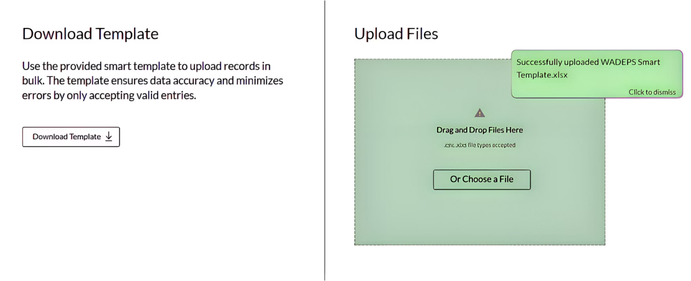
Submit Batch Upload Records for Supervisor Approval
Once Batch Upload records are uploaded, they need to be submitted for supervisor approval.
The individual who submitted the batch file can locate these records in the Officer Dashboard, in the Drafts tab under 'My Records.' Each row in the Batch Upload will be a separate record under drafts.
To begin reviewing a record, click Review on the right side of the record.
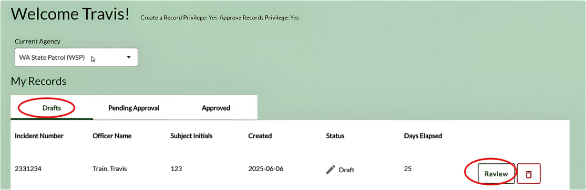
Selecting Review will open the record in the WADEPS Reporting Tool. Use the Next button at the bottom of the screen to navigate through each section of the record. After reviewing all items, select the Submit for Review button on the last page of the record.
For a detailed, step-by-step guide on using the Reporting Tool, refer to 'Create a Record' on page 18 of this manual.
Supervisor Review
In this chapter, you will learn how supervisors use the dashboard, review metrics, manage users, report no-event months, and approve records submitted by staff.
Access the Supervisor Dashboard
Once Use of Force reports are submitted, they will appear in the Supervisor Dashboard for review. This review process is a critical step to ensure that all data entered into the WADEPS system is accurate and complete.
A supervisor must complete this review before the report is officially submitted and recorded into WADEPS.
The Supervisor Dashboard
Access to Supervisor Dashboard
Access to the Supervisor Dashboard is restricted to agency personnel with appropriate permissions. This is determined by your agency.
- Checking Your Permissions
- There are two ways to see if you have review permissions in WADEPS:
- The Officer Dashboard
- Navigate to the Officer Dashboard (your home page)
Look at the Welcome Message at the top of the page.
- If you have permissions, you will see:
- Permission Level: Admin
- Supervisor Dashboard Button
- If you have review permissions, a Supervisor Dashboard button will appear in the top right corner of every screen in WADEPS
If either the Supervisor Dashboard button is missing or Approve Records Privilege is not shown or displays No, you do not currently have access to review records.
Open the Supervisor Dashboard
To open the Supervisor Dashboard, click the Supervisor Dashboard button located in the top right corner of the screen.
You can return to the Officer Dashboard any time by clicking the Officer Dashboard button located in the top right corner of your screen or by selecting the WADEPS logo in the upper left corner.
Review Supervisor Dashboard Metrics
The Supervisor Dashboard provides supervisors with access to key features for managing Use of Force reporting, along with important agency-level metrics.The dashboard has the following components:
Pending Approvals (tab and tile)
Records awaiting supervisor review. This information is shown in both dashboard tile and tab in the Agency Records Requiring Review section.
See "Reviewing and Approving Records" section of this manual.
Awaiting Final Review
Records that have been reviewed by the supervisor and are awaiting completion of administrative follow-up items. These are displayed in both the Approved Records tile and the Awaiting Final Review tab in the Agency Records Requiring Review section.
See 'Administrative Follow-Up Items' section of this manual.
Archived Records
Records that have been fully completed, including the Administrative Follow-Up, and archived.
Manage Users
Supervisors can assign Create a Record and Supervisor permissions by using the Manage Users button in the Active Users in your Agency tile.
See 'Manage Users' section of this manual.
Key Agency Statistics:
Real-time metrics summarizing reporting activity and agency performance.
For full descriptions, see 'Understanding Dashboard Metrics' below.
Report No Reportable Use-of-Force Events for the Month
Supervisors can report no UOFs for the month
Understanding Dashboard Metrics
The Supervisor Dashboard includes metrics tiles that provide supervisors with quick access to agency statistics and links to related features
Pending Approvals
Displays the number of records awaiting supervisor review. Click View All to go to the Pending Approvals Page
Approved Records
Shows the number of records that have been approved and are awaiting administrative follow-up.
Records in Archive
Records that have been fully completed, including the Administrative Follow-Up, and archived.
Average Days to Record Reported Compliance
Displays the average time between a use of force event and completed supervisor approval.
Average Days to Administrative Follow-Up
Displays the average number of days taken to complete the Administrative Follow Up items.
Active Users in Your Agency
Shows how many active users are currently associated with your agency. Click Manage Users to adjust user permissions.
User Management
The User Management feature in the Supervisor Dashboard allows supervisors in WADEPS to assign Create Record permissions and Supervisor permissions for your agency.
To manage access:
Select Manage Users from the Active Users in Your Agency Tile on the right of the screen.
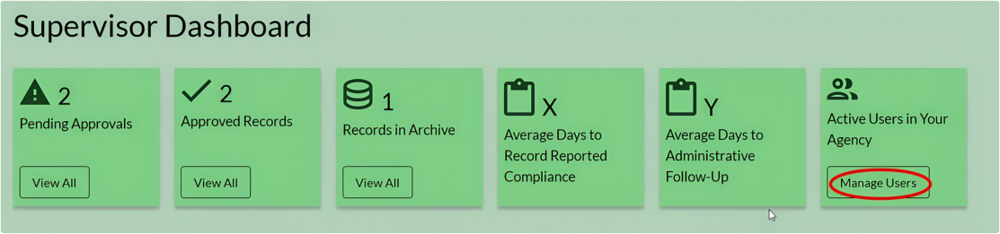
This will take you to the Agency Profile and User Management page. A list of your agency personnel and their assigned permissions will appear.
Permission Levels:
Read Only - User can only view their own use of force reports.
CAD Upload Only - User can upload CAD data only.
Create Records - User can create and submit for supervisor approval their own use of force reports in WADEPS (via Create a Record).
Admin - User has full permissions, including:
- Submitting reports on behalf of others
- Uploading CAD data
- Conducting Supervisor Review
- Completing Administrative Follow-up
- Assigning supervisor permissions
- To grant Create Record permissions:
Assigning Permissions:
Locate the user in the personnel list.
Use the drop-down menu in the permissions column.
Select the appropriate permission level.
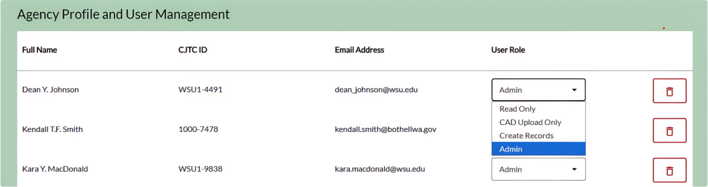
Adding New Users
In some cases, the personnel that needs create and approve permissions may not be on the agency profile and user management page. This could occur for two primary reasons:
An officer's primary employment is with another agency.
The individual does not have a WADEPS account.
To add these users manually, select the Add New Users button.
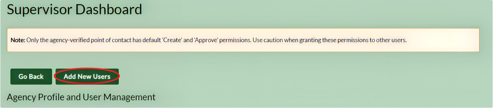
To add an officer whose primary employment is with another law enforcement agency or other personnel who already have a WADEPS account:
In Add Existing Users to Agency section, start typing in the search field and use the drop-down menu to find the individual.
Select the individual from the list.
Click Add User to Agency.
To add civilian personnel who do not have a WADEPS account (not including officers):
In the Upload New Users to WADEPS section, select the Download New Users Template.
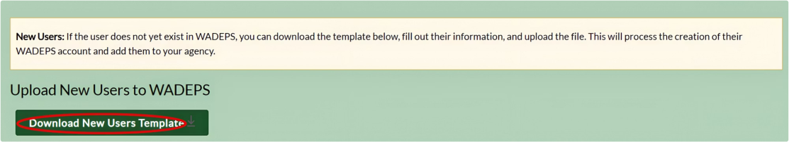
Open and complete the template. The following fields are required: Agency Name, First Name, Last Name, Personal Email Address.
Upload the completed file.
The individual should now appear in User Management to assign their roles. If they do not appear, refresh the page.
Please notify the individuals that they need to activate their WADEPS Account.
Report No Reportable Use-of-Force Events for the Month
Agencies can report no reportable UOF events for the month in the 'Report No Reportable Use-of-Force Events for the Month' section located at the bottom of the supervisor dashboard.
Select the month in 'Select Month' and click the 'Confirm no UOF' button.
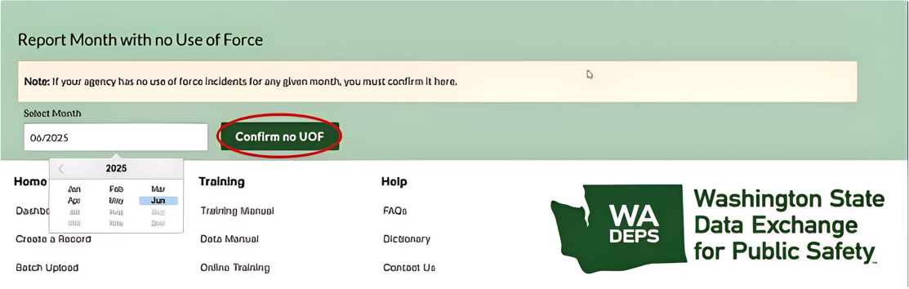
When the 'Confirm no UOF' button is selected, a message will confirm the submission in the WADEPS system.
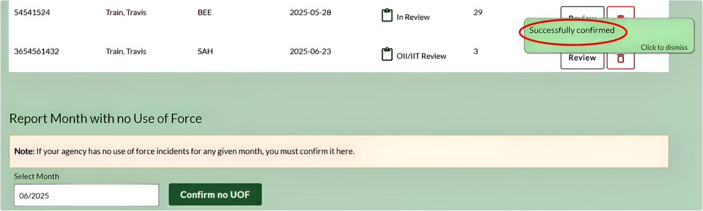
Agencies must report no uses of force by the 5th of every month.
If no uses of force occurred in September, the agency must report 'No Uses of Force' by October 5th.
Review and Approve Reports
Pending Approvals
Reviewing Pending Approvals is necessary to move use of force records to the final stage of the review process: Administrative Review. This initial supervisor review allows you to correct any mistakes in the record.
Accessing Pending Approvals
All records submitted through Create a Record or Batch Upload will appear in Pending Approvals on the Supervisor Dashboard. There are two ways to access these records:
Pending Approvals Metric (Dashboard Summary Tile)
Located in the upper left area of the dashboard, the Pending Approvals tile displays the total number of records awaiting review.
Click 'View All' within the tile to open the full Pending Approvals Page.
Agency Records Requiring Review (Dashboard Section)
Located in the center of the dashboard, this section displays list of records needing review.
Each entry includes the same identifying details above.
- Tip: Scroll down to view all records
- What you will see on the Pending Approvals Page
- This page displays a list of individual records submitted for review. Each record includes key identifying information:
- Incident Number
- Officer Name
- Subject Initials
- Date Created
- Record Status (e.g., OII/IIT Review, In Review)
- Days Elapsed since submission
Reviewing Records Pending Approval
Open the Record
To begin reviewing a record, Click the 'Review' button on the far-right side of the record listing in Pending Approvals.
Reviewing the Record:
Clicking 'Review' opens the full record for supervisor review.
This format mirrors the Create a Record process, detailed on:
Page 11: Create a Record
Page 13: Step-by-step guide to each data element and section.
Review all data fields carefully for accuracy.
If any information is incorrect, make corrections directly in the record.
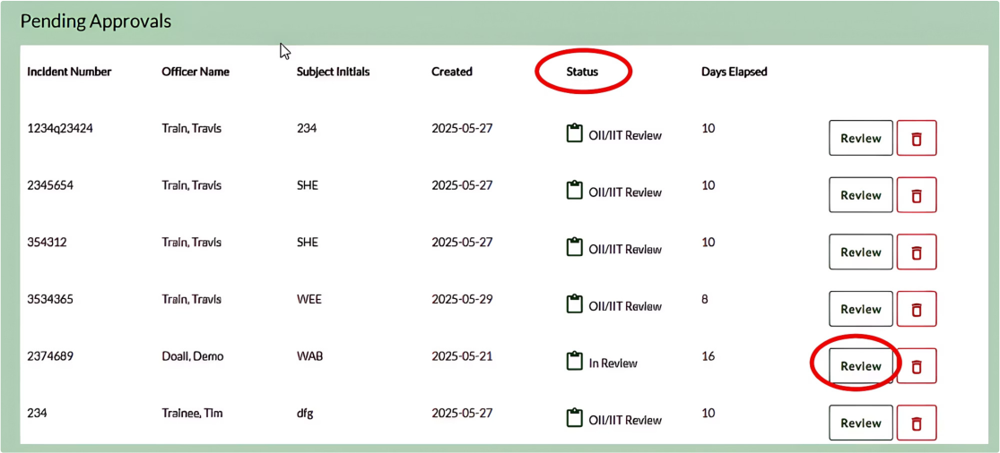
Submitting the Record
After verifying all sections, click Submit.
This action officially submits the record to WADEPS.
To complete the full record, return later to complete the Administrative Follow-Up Items once they become available.
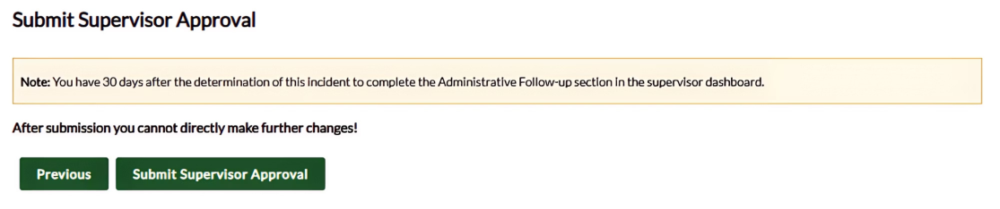
Administrative Follow-Up
In this chapter, you will learn how to access administrative follow-up work items and complete the post-review updates required in WADEPS.
Access Administrative Follow-Up
After supervisor approval, agency personnel are required to complete the Administrative Follow-Up section of the record. Once these items are completed, the use of force report is considered complete in the WADEPS system.
Agencies must complete Administrative Follow-Up within 30 days from the conclusion of the use of force review or investigation.
Accessing Administrative Follow-Up
- To access Administrative Follow-Up Items:
- Go to the Supervisor Dashboard
- See Open the Supervisor Dashboard
- Under Agency Records Requiring Review, select 'Awaiting Final Review Tab.'
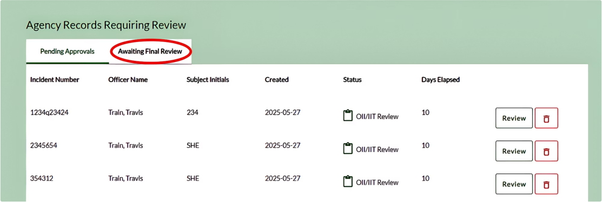
Find the record and click Admin Review button on the right side.
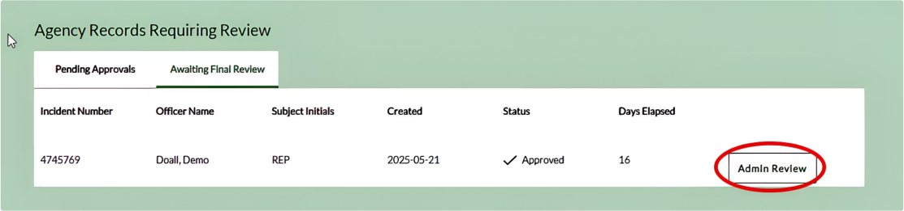
The Administrative Follow-Up Items page will open.
Completing Administrative Follow-Up Items
UOF Review
The UOF Review field indicates the level of investigation conducted for this use of force record.
- Select all that apply from the following:
- No review
- Administrative review
Definition: The use of force has been reviewed by departmental supervisors and/or command staff as part of the agency's standard operating procedures to assess whether the force used was within agency policy. Typically, this would involve review and signatures indicating concurrence or dissent by a chain of command. If the agency has a force review team, force review board, or similar administrative entity, this would also be considered administrative review.
- Internal investigation
- External investigation
- Internal Action
If Administrative review, Internal investigation, or External investigation is selected in UOF Review, the Internal Action field appears to the right. In this field, indicate the action required by the review or investigation. Response options include:
Information restricted
Definition: Access to some or all the information about the use of force is limited due to legal, investigative, or policy-based reasons.
No action
Definition: The review concluded with no corrective, disciplinary, or administrative action taken.
- Change assignment
- Definition: The officer was reassigned to a different role, shift or unit as a result of the review or investigation.Training
Definition: The officer was required to undergo additional training based on findings of the review or investigation.
- Reprimand
- Definition: The officer received a formal warning for conduct or policy violations related to the incident.Terminate
Definition: The officer's employment was ended as a result of the findings from the review or investigation.
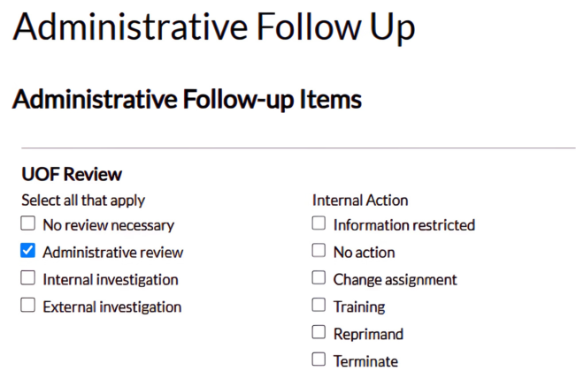
Administrative Review
This section appears only if 'Administrative Review' is selected in UOF Review field . When selected, you will be required to complete 3 fields: Administrative Review Outcome, Admin Review Start, and Admin Review End.
- Administrative Review Outcome
- In this field, indicate the outcome of the Administrative Review from the following options:
Within Policy: The use of force was determined to be in compliance with agency policy.
Policy Violation: The use of force was determined to violate agency policy.
Admin Review Start
Enter the date the administrative review began using the pop-up calendar for by typing it in manually using MM/DD/YYYY format.
Admin Review End
Enter the date the administrative review ended using the pop-up calendar for by typing it in manually using MM/DD/YYYY format.
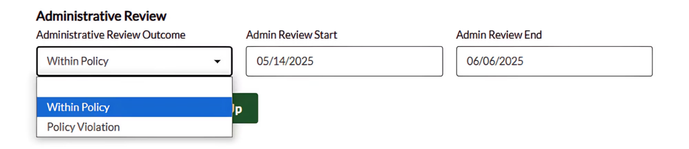
Internal Investigation
This section appears only if 'Internal Investigation' is selected in UOF Review field . When selected, you will be required to complete 3 fields: Internal Investigation Outcome, Internal Investigation Start, and Internal Investigation End.
- Internal Investigation Outcome
- In this field, indicate the outcome of the Internal Investigation from the following options:
- Exonerated
Definition: The investigation found that the officer's actions were consistent with policies and procedures.
Not Sustained
Definition: The investigation did not find sufficient evidence to prove or disprove that a policy violation occurred.
Sustained
Definition: The investigation found sufficient evidence that the officer violated policy or procedures.
Internal Investigation Start
Enter the date the internal investigation began using the pop-up calendar for by typing it in manually using MM/DD/YYYY format.
Internal Investigation End
Enter the date the internal investigation ended using the pop-up calendar for by typing it in manually using MM/DD/YYYY format.
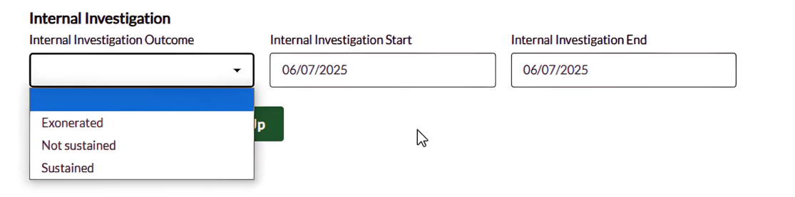
External Investigation
This section appears only if 'Internal Investigation' is selected in UOF Review field . When selected, you will be required to complete 3 fields: Internal Investigation Outcome, Internal Investigation Start, and Internal Investigation End.
- External Investigation Outcome
- In this field, indicate the outcome of the External Investigation from the following options:
- Exonerated
Definition: The investigation found that the officer's actions were consistent with policies and procedures.
Not Sustained
Definition: The investigation did not find sufficient evidence to prove or disprove that a policy violation occurred.
Sustained
Definition: The investigation found sufficient evidence that the officer violated policy or procedures.
External Investigation Start
Enter the date the external investigation began using the pop-up calendar for by typing it in manually using MM/DD/YYYY format.
External Investigation End
Enter the date the external investigation ended using the pop-up calendar for by typing it in manually using MM/DD/YYYY format.
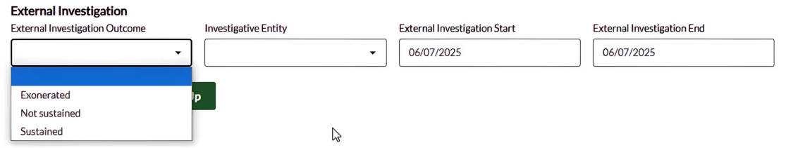
Submit Administrative Follow-Up
Once all required administrative follow-up items are complete, click Submit Administrative Follow Up button located at the bottom left of the screen to finalize the use of force record
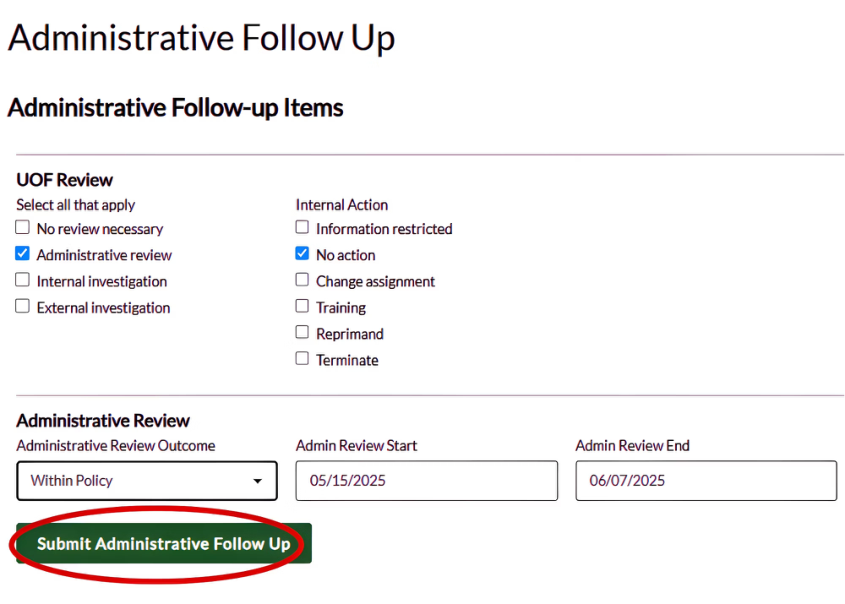
CAD Data in WADEPS
In this chapter, you will learn how CAD mapping supports WADEPS reporting and how to prepare and upload CAD-related files.
CAD Data Overview
WADEPS uses Computer-Aided Dispatch (CAD) data to provide context for use of force (UOF) events. By linking UOF reports with CAD information, WADEPS can calculate UOF rates based on call volume and call types.
Agencies without CAD data will not have UOF rates generated. In these cases, WADEPS will report UOF incidents as counts only.
- There are three key steps for uploading CAD data into WADEPS:
- CAD Mapping
- Download the CAD Data Template
- Upload CAD Data into WADEPS
CAD Mapping
WADEPS is working with public safety answering points (PSAPs) and agencies to reduce data-entry burden by mapping CAD call type labels to WADEPS Initial Incident Type and Initial Incident Detail.
Mapping ensures:
Call types are classified consistently across agencies.
Agency-to-agency comparisons are meaningful.
WADEPS analysis accurately reflects the context of calls for service. WADEPS will complete initial mapping of CAD call type codes and then coordinate with PSAPS and agencies to confirm accuracy. This collaborative process ensures that each call type is assigned to the correct Initial Incident Type and Initial Incident Detail.
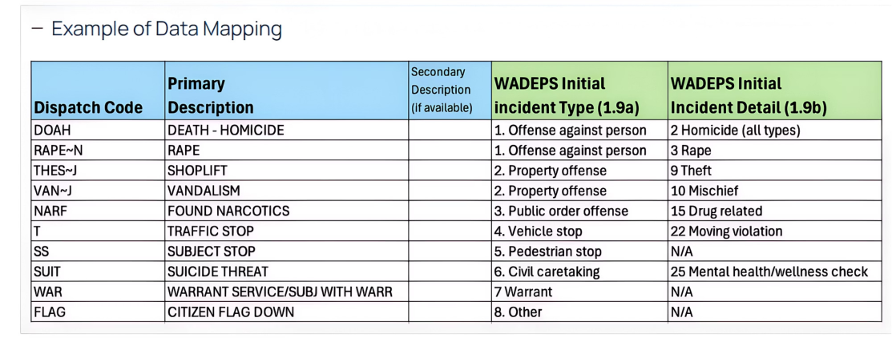
CAD Mapping Resources
For more information about CAD mapping or to learn how your agency can participate, please visit: WADEPS CAD data page.
CAD Data Upload
To upload CAD data:
Select the CAD Upload button at the top center of the screen.
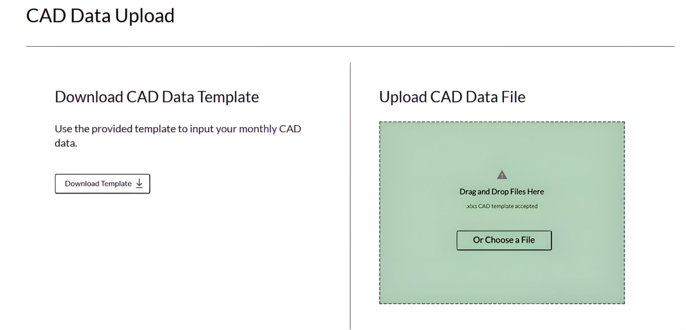
Download the CAD Data Template
Select the Download Template button on the left side of the screen underneath the "Download CAD Data Template."
Complete the CAD Data Template
Open the template and select the Template worksheet on the bottom of the spreadsheet.
- There are 5 columns to complete in the CAD Template:
- incident_id
Enter the Computer Aided Dispatch (CAD) incident number associated with the UOF event.
agency_name
Enter the name of your agency.
record_creation_time
Enter the record creation time from your CAD system.Use the following format: mm/dd/yyyy hh:mm:ss AM/PM.
- Example: 08/15/2025 02:34:55 PM
- original_call_type
Enter the original call type or nature of call code from your CAD system.
city
Enter the city where the use of force event occurred.
CAD Reporting Requirement
CAD Data Uploads use year-to-date basis to ensure any changes or corrections in agency systems are accurately reflected in WADEPS.
Agencies must upload CAD Data within 5 business days at the start of each month.
Each file must include data from January 1st through the end of the prior month. Once processed, any errors will appear on the Notifications page. Click the! icon in the top right corner to review them.
Upload the CAD Data Template
To upload your CAD Data Template, complete the following steps:
Save your file as either an Excel (.xlsx) or CSV (.csv) format.
If you are using Excel and choose to save the file as CSV:
Ensure that any commas used within data fields are properly enclosed. For example, in the officer name field: "James, John H."
Excel typically does this for you during the save process.
If you are working directly in a CSV or text editor (e.g. Notepad or similar) to enter or edit data, do not use commas within any data fields, as this may disrupt the upload formatting.
Select the CAD Data Upload button in the top center of your screen. Drag and drop your saved file in Upload Files OR select the choose a file button.
You will receive a pop-up message that your file has successfully uploaded.
If there are any, they will be in your Notifications page (! icon at the top right of the screen).
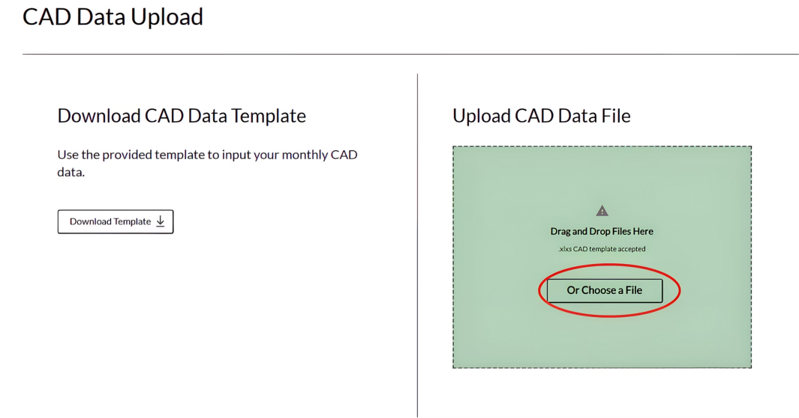
Frequently Asked Questions
In this chapter, you will find answers to common reporting questions that staff and supervisors encounter while working in WADEPS.
Frequently Asked Questions
How to report a use-of-force event that is currently under internal investigation
If the use of force event is under internal investigation, it still must be reported to WADEPS using the online reporting tool. This can only be reported using the Create a Record feature. The first question will ask if the officer's use of force (UOF) on the subject is under internal investigation and/or referred for independent investigation by the Office of Independent Investigations (OII) or the Independent Investigation Team (IIT). Select Internal Investigation and provide limited event details as directed. Please note the Batch Upload feature cannot be used for these events.
How to report a use-of-force event that has been referred for independent investigation by the Office of Independent Investigations (OII) or the Independent Investigation Team (IIT)
If the use of force event has been referred for independent investigation, it still must be reported to WADEPS using the online reporting tool. This can only be reported using the Create a Record feature. The first question will ask if the officer's use of force (UOF) on the subject is under internal investigation and/or referred for independent investigation by the Office of Independent Investigations (OII) or the Independent Investigation Team (IIT). Select Internal Investigation and provide limited event details as directed. Please note the Batch Upload feature cannot be used for these events. Are PIT maneuvers a reportable use of force'
Yes, PIT maneuvers are a reportable use of force. Chapter 10.118 RCW includes "used a vehicle to intentionally strike a person or other vehicle" as a reportable use of force type regardless of injury. WADEPS includes an additional field so agencies can specify if the strike was a PIT maneuver under 40 MPH, a PIT maneuver 40 MPH or above, or not a PIT maneuver.
How do we report a use-of-force event if the subject is unknown
If the subject is unknown, the event must still be reported in WADEPS. Unknown will be entered into the subject id. Unknown can also be selected for all the subject demographic fields. The age field is numeric, enter 999 in this field to indicate an unknown subject.
How do we report a use-of-force event when a chemical agent is deployed during crowd control
When a chemical agent (e.g. tear gas) is deployed as a crowd control measure—not at specific individuals—follow these steps in WADEPS:
Enter "crowd" in the Subject ID field.
Select "Unknown" for all subject-related fields (e.g., age, race and ethnicity, gender, etc.).
If multiple officers deployed tear gas, a separate use of force report for each officer must be submitted to WADEPS.
If there are known subjects who were directly affected or targeted (e.g. a subject was arrested or received medical attention):
Submit a separate use of force report for each know subject, including all subject-related information.
What if the under-investigation status is not known at the time of reporting, or an investigation starts days or weeks after the use-of-force event
WADEPS allows some flexibility for investigations that begin during or after the initial reporting period depending if the investigation occurs within the 30-day reporting period or after.
- Within the 30-Day Reporting Period
- If the investigation status changes while your report is still in progress:
Delete the draft record (before supervisor approval).
Re-enter the record using Create a Record and select the appropriate investigative entity (Internal Investigation, OII, IIT).
This pauses the record and stops compliance timers.
Complete the UOF report when ready: Once the investigation determination is finalized, return to the record and fill in all required fields within 30 days.
Submit as normal: Route the record through the standard approval workflow.
- After the 30-Day Reporting Period
- If an investigation occurs after the report has been approved:
Records are locked: you cannot edit an approved report.
Separate Administrative Reporting: Report the administrative outcome (Administrative Follow-Up Items) within 30 days of investigation determination.
Key Takeaways
You can pause reporting when you expect an investigation but don't yet have full information.
Pausing is only available before supervisor approval.
Remember there are two processes:
- Initial UOF Event reporting
- Administrative Follow-Up Items